<!doctype html>
<html lang="en">
<head>
  <meta charset="utf-8">
  <meta name="viewport" content="width=device-width, initial-scale=1">
  <title>arxiv digest — 2026-09-26</title>
  <style>
:root {
  --bg: #ffffff;
  --fg: #1f2328;
  --muted: #59636e;
  --border: #d0d7de;
  --card: #f6f8fa;
  --link: #0969da;
}
body {
  max-width: 980px;
  margin: 0 auto;
  padding: 2rem 1rem 5rem;
  font-family: -apple-system, BlinkMacSystemFont, "Segoe UI", Helvetica, Arial, sans-serif;
  line-height: 1.55;
  color: var(--fg);
  background: var(--bg);
}
a { color: var(--link); }
img { max-width: 100%; height: auto; }
pre, code { background: var(--card); border-radius: 6px; }
pre { padding: 1rem; overflow-x: auto; }
blockquote { border-left: 4px solid var(--border); padding-left: 1rem; color: var(--muted); }
details { margin: 0.6rem 0; }
summary { cursor: pointer; font-weight: 600; }
.paper-figures-scroll {
  display: flex;
  gap: 1rem;
  overflow-x: auto;
  overscroll-behavior-x: contain;
  padding: 0.75rem 0.25rem 1rem;
  margin: 1rem 0 1.25rem;
  border-top: 1px solid var(--border);
  border-bottom: 1px solid var(--border);
  scroll-snap-type: x proximity;
}
.paper-figure-card {
  flex: 0 0 min(260px, 72vw);
  scroll-snap-align: start;
  background: var(--card);
  border: 1px solid var(--border);
  border-radius: 12px;
  padding: 0.55rem;
}
.paper-figure-card img {
  display: block;
  width: 100%;
  max-height: 240px;
  object-fit: contain;
  background: white;
  border-radius: 8px;
}
.paper-figure-caption {
  display: block;
  margin-top: 0.5rem;
  color: var(--muted);
  font-size: 0.85rem;
}
.figure-strip-hint {
  color: var(--muted);
  font-size: 0.9rem;
  margin-bottom: -0.3rem;
}
</style>
  <!-- MathJax: renders $...$ inline math and $$...$$ display math, plus
       \(...\) and \[...\]. Loaded from the official CDN; works offline
       once cached. Configured to skip code/pre blocks so arxiv IDs that
       look like dollar amounts don't get mangled. -->
  <script>
    window.MathJax = {
      tex: {
        inlineMath: [['$', '$'], ['\\(', '\\)']],
        displayMath: [['$$', '$$'], ['\\[', '\\]']],
        processEscapes: true,
        processEnvironments: true
      },
      options: {
        skipHtmlTags: ['script', 'noscript', 'style', 'textarea', 'pre', 'code'],
        ignoreHtmlClass: 'tex2jax_ignore',
        processHtmlClass: 'tex2jax_process'
      }
    };
  </script>
  <script id="MathJax-script" async
    src="https://cdn.jsdelivr.net/npm/mathjax@3/es5/tex-chtml.js"></script>
</head>
<body>
<header style="background-color: #333; color: white; padding: 15px; margin-bottom: 20px;">
  <h1 style="margin: 0; font-size: 24px;">
    <a href="https://ochelpan.github.io/arXiv_clean/" style="color: white; text-decoration: none;">Main</a>
  </h1>
</header>

<h1>Daily arXiv Report</h1>

<hr>
<p>
<a href="index.html">← Index</a>
 · <a href="papers_01.html">← Previous</a> · <a href="papers_03.html">Next →</a>
</p>
<hr>

<h2>Papers 21–40</h2>
<p><a id="paper-2609.29385"></a></p>
<h3 id="anisotropic-information-geometry-of-entropy-production"><a href="http://arxiv.org/abs/2609.29385v1">Anisotropic information geometry of entropy production</a></h3>
<p><strong>Authors:</strong> Tomohiro Nishiyama, Yoshihiko Hasegawa<br>
<strong>Type:</strong> theory · <strong>Category:</strong> statistical mechanics · <strong>PDF:</strong> <a href="https://arxiv.org/pdf/2609.29385v1">https://arxiv.org/pdf/2609.29385v1</a><br>
<strong>Analysis basis:</strong> full PDF text, analyzed in chunks
<strong>Topic relevance:</strong> <code>correlated / nonlocal dissipation</code> <strong>3/5</strong> · <code>driven-dissipative phase transition</code> <strong>3/5</strong> · <code>non-equilibrium universality</code> <strong>3/5</strong> · <code>Keldysh / 2PI / non-Gaussian methods</code> <strong>2/5</strong> · <code>methods for driven-dissipative</code> <strong>2/5</strong> · <code>quantum measurements</code> <strong>1/5</strong></p>
<div class="figure-strip-hint">↔ Scroll figures horizontally</div>
<div class="paper-figures-scroll">
<figure class="paper-figure-card">
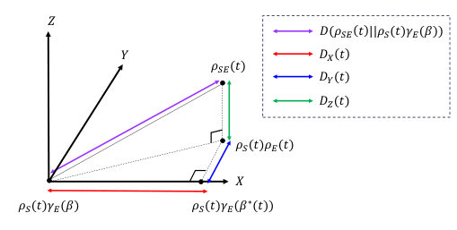
<figcaption class="paper-figure-caption"><b>Fig 1.</b> FIG. 1. Geometric decomposition of D(ρSE(t)∥ρS(t)γE(β)) in an open quantum system. The entropy production is ex- pressed as the difference in D(ρSE(t)∥ρS(t)γE(β)) between distinct time. The definitions of DX(t), DY (t) and DZ(t), which correspond to metrics of each axis, are provided in Eqs. (22)–(24).</figcaption>
</figure>
<figure class="paper-figure-card">
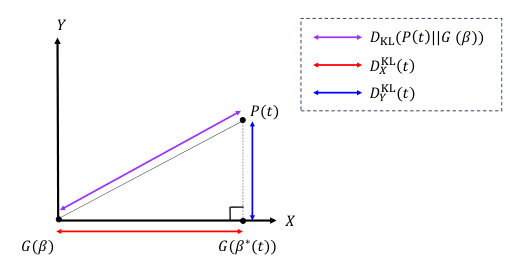
<figcaption class="paper-figure-caption"><b>Fig 2.</b> FIG. 2. Geometric decomposition of DKL(P(t)∥G(β)) in a classical Markov system. The entropy production is repre- sented by the difference in DKL(P(t)∥G(β)) between different times. In the classical Markov regime, the Z axis, representing system-environment correlations, is absent. The definitions of DKL X (t) and DKL Y (t), which correspond to metrics of each axis, are provided in Eqs. (47) and (48).</figcaption>
</figure>
<figure class="paper-figure-card">
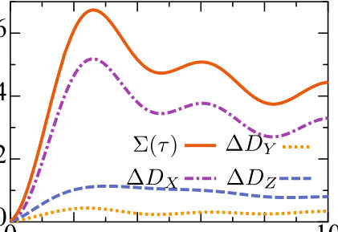
<figcaption class="paper-figure-caption"><b>Fig 3.</b> FIG. 3. Decomposition of the entropy production given in Eq. (38) for (a) β = 1 and (b) β = 30. The other settings are µ = 1, K = 5, W = 1, and ϵd = 1. Σ(τ), ∆DX, ∆DY , and ∆DZ are represented by the solid, dot-dashed, dotted, and dashed lines, respectively, as functions of time t.</figcaption>
</figure>
</div>

<p><strong>Summary.</strong> This theoretical paper develops a geometric framework to decompose entropy production in open quantum systems into three orthogonal components. It reveals that these components are governed by distinct geometric constraints, leading to rigorous, physically accessible upper and lower bounds on the total entropy production. This advances the understanding of non-equilibrium thermodynamics by linking it to information geometry.</p>
<p><strong>Why it may be interesting.</strong> This work provides powerful geometric tools to quantify non-equilibrium processes, linking fundamental concepts like entropy production to measurable physical quantities and geometric constraints, which is highly relevant for understanding thermalization and dissipation in complex quantum systems.</p>
<details>
<summary>Detailed structure</summary>
<p><strong>Main problem.</strong> The paper aims to provide a unified geometric framework to analyze the intrinsic anisotropy of entropy production in open quantum systems.</p>
<p><strong>Main result.</strong> Entropy production is decomposed into three geometrically distinct contributions (temperature deviation, environment deviation, and correlations), each obeying fundamentally different bounds.</p>
<p><strong>Method.</strong> The analysis uses the quantum relative entropy and applies a hierarchical projection structure to achieve an exact orthogonal decomposition of the entropy production functional.</p>
<p><strong>Model / system.</strong> The system is an open quantum system composed of a system (S) coupled to an environment (E), governed by a total Hamiltonian H(t). The framework is shown to apply to classical Markovian dynamics as a limit.</p>
<p><strong>Key observables.</strong> Entropy production ($\Sigma(	au)$), and its three orthogonal geometric components ($D_X, D_Y, D_Z$).</p>
<p><strong>Important parameters / regimes.</strong> The analysis assumes $\hbar=kB=1$. The bounds depend on system/environment dimensions and mean energy/Hamiltonian variance.</p>
<p><strong>Assumptions / limitations.</strong> The decomposition relies on the orthogonality condition for quantum relative entropy, and the analysis uses the quantum speed limit to derive bounds.</p>
<p><strong>Figures summary.</strong> Figures illustrate the geometric decomposition of entropy production in both open quantum systems and classical Markovian systems, showing the vanishing of the correlation component in the latter.</p>
<p><strong>Paper structure.</strong> The paper introduces the geometric framework using quantum relative entropy, derives the three-component orthogonal decomposition of entropy production, analyzes the distinct geometric bounds for each component, and finally combines this with dynamical speed limits to establish rigorous bounds on $\Sigma(	au)$.</p>
</details>
<details>
<summary>Abstract</summary>
<p>We reveal that the information geometry of entropy production exhibits an intrinsic anisotropy, providing a unified origin for the inequivalent geometric constraints obeyed by its different components. Using a hierarchical projection structure of quantum relative entropy, we derive an exact orthogonal decomposition of entropy production into three distinct geometric contributions associated with the deviation of the Gibbs projection temperature from the reference temperature, the deviation of the environment from its Gibbs projection state, and system--environment correlations. We demonstrate that these contributions obey fundamentally different geometric bounds: the first reduces to a classical Kullback--Leibler divergence and admits no universal upper bound in terms of the trace distance and the system and environment dimensions alone, whereas the latter two admit rigorous distance-based bounds with dimension-dependent factors. The framework also applies to classical Markovian dynamics described solely in terms of the system state, for which the system--environment correlation contribution is absent from the decomposition. Combining this geometric decomposition with dynamical speed limits, we obtain rigorous bounds on entropy production expressed solely in terms of physically accessible quantities, such as the mean energy and Hamiltonian variance.</p>
</details>
<p><sub><a href="#top">↑ back to top</a></sub></p>

<p><a id="paper-2609.29197"></a></p>
<h3 id="multidimensional-dynamical-centrality-from-green-functions-in-complex-networks"><a href="http://arxiv.org/abs/2609.29197v1">Multidimensional dynamical centrality from Green functions in complex networks</a></h3>
<p><strong>Authors:</strong> Yusen Wang, Hao Yu<br>
<strong>Type:</strong> theory · <strong>Category:</strong> statistical mechanics · <strong>PDF:</strong> <a href="https://arxiv.org/pdf/2609.29197v1">https://arxiv.org/pdf/2609.29197v1</a><br>
<strong>Analysis basis:</strong> full PDF text, analyzed in chunks
<strong>Topic relevance:</strong> <code>Keldysh / 2PI / non-Gaussian methods</code> <strong>3/5</strong> · <code>methods for driven-dissipative</code> <strong>3/5</strong> · <code>analog quantum simulation</code> <strong>2/5</strong> · <code>correlated / nonlocal dissipation</code> <strong>2/5</strong> · <code>driven-dissipative phase transition</code> <strong>2/5</strong> · <code>non-equilibrium universality</code> <strong>2/5</strong></p>
<div class="figure-strip-hint">↔ Scroll figures horizontally</div>
<div class="paper-figures-scroll">
<figure class="paper-figure-card">
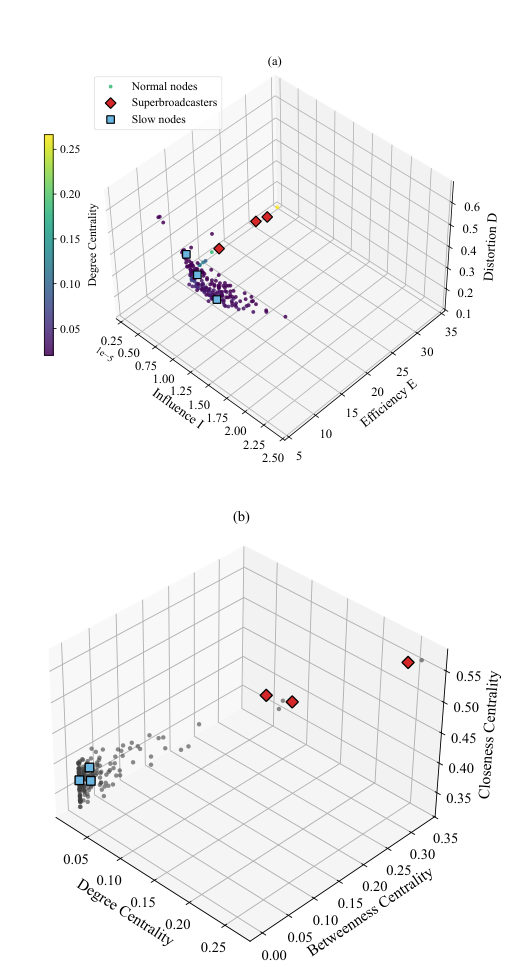
<figcaption class="paper-figure-caption"><b>Fig 1.</b> FIG. 1. Comparison between dynamical and topological cen- trality spaces. (a) Distribution of nodes in the dynamical centrality space defined by Influence I, Efficiency E, and Dis- tortion D. Normal nodes are colored according to their degree centrality, while superbroadcasters and slow nodes are high- lighted by red diamonds and blue squares, respectively. (b) Distribution of the same nodes in the conventional topological centrality space defined by degree, betweenness, and closeness centralities.</figcaption>
</figure>
<figure class="paper-figure-card">
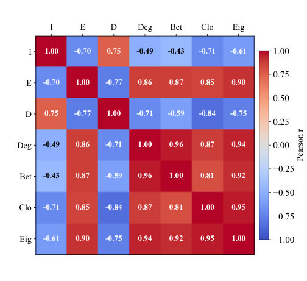
<figcaption class="paper-figure-caption"><b>Fig 2.</b> FIG. 2. Pearson correlation matrix among the three dynam- ical indicators and four topological centrality measures.</figcaption>
</figure>
<figure class="paper-figure-card">
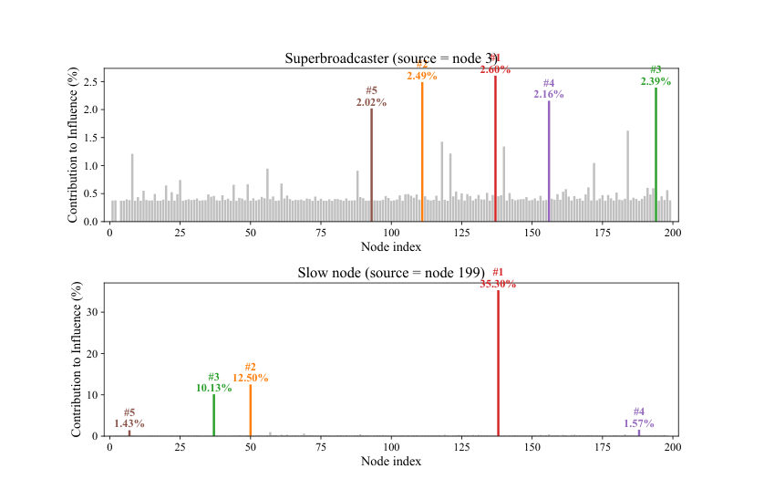
<figcaption class="paper-figure-caption"><b>Fig 3.</b> FIG. 3. Time-integrated contribution profiles of a superbroadcaster and a slow node. The bars show the fractional contribution Pis of each target node to the total Influence of the corresponding source node.</figcaption>
</figure>
<figure class="paper-figure-card">
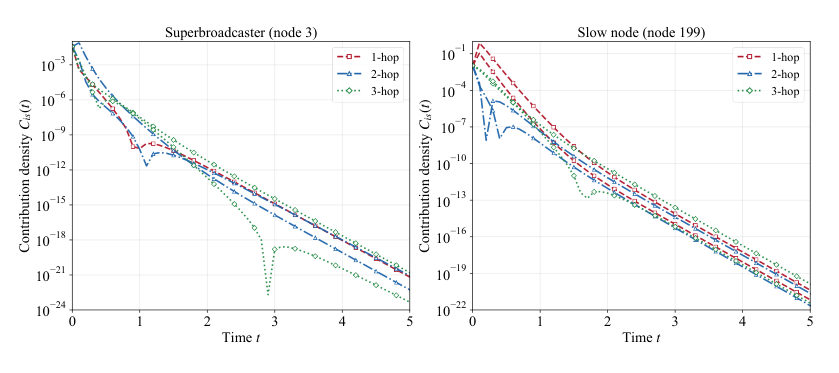
<figcaption class="paper-figure-caption"><b>Fig 4.</b> FIG. 4. Early-time contribution density Cis(t) for representative target nodes at one-, two-, and three-hop topological distances from the source. The source node itself is excluded. Curves are grouped by hop distance from the source.</figcaption>
</figure>
<figure class="paper-figure-card">
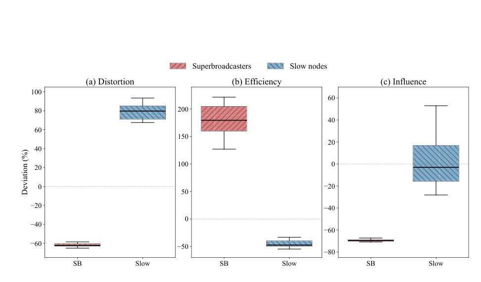
<figcaption class="paper-figure-caption"><b>Fig 5.</b> FIG. 5. Robustness of the three dynamical indicators across 20 independent BA network realizations. Boxes span the interquar- tile range; horizontal lines mark the median. Whiskers extend to the most extreme values within 1.5 times the interquartile range.</figcaption>
</figure>
</div>

<p><strong>Summary.</strong> This paper introduces a novel, multidimensional method to characterize node importance in complex networks by analyzing the system's response to small perturbations via the Green function. It extracts three complementary metrics—Influence, Efficiency, and Distortion—which quantify different aspects of how a perturbation propagates. This approach moves beyond single structural measures by providing a detailed, physically interpretable decomposition of dynamical node behavior.</p>
<p><strong>Why it may be interesting.</strong> The methodology of using linear response theory (Green functions) to extract multiple, complementary dynamical metrics (temporal, spectral, cumulative) is highly relevant to analyzing open quantum systems or complex many-body dynamics where single metrics fail to capture full system behavior.</p>
<details>
<summary>Detailed structure</summary>
<p><strong>Main problem.</strong> Conventional centrality measures are insufficient because they only capture structural relations and fail to resolve the temporal and spectral organization of dynamical perturbation responses.</p>
<p><strong>Main result.</strong> The framework successfully decomposes a common dynamical response into three distinct, physically interpretable characteristics: Influence, Efficiency, and Distortion.</p>
<p><strong>Method.</strong> The study develops a multidimensional characterization framework by analyzing the Green function of a linearized networked system.</p>
<p><strong>Model / system.</strong> The framework is applied to weighted Kuramoto–Sakaguchi dynamics on heterogeneous Barabási–Albert networks, modeling coupled oscillators on a complex network structure.</p>
<p><strong>Key observables.</strong> Influence (cumulative response strength), Efficiency (temporal rate of response), and Distortion (spectral concentration), alongside a source--target contribution matrix.</p>
<p><strong>Important parameters / regimes.</strong> The analysis is performed on BA networks with specific parameters (e.g., N=200, m=4) and involves time-window truncation for numerical stability.</p>
<p><strong>Assumptions / limitations.</strong> The analysis fundamentally relies on the linear-response assumption, which limits its applicability to strong perturbations or highly nonlinear regimes.</p>
<p><strong>Figures summary.</strong> The notes mention a correlation analysis (Table I) comparing the three dynamical measures against conventional structural centralities (Degree, Betweenness, etc.).</p>
<p><strong>Paper structure.</strong> The paper first establishes the need for a multidimensional characterization, then details the linear-response construction using the Green function, defines the three indicators (I, E, D) and their contribution matrix, and finally validates the approach numerically and discusses limitations.</p>
</details>
<details>
<summary>Abstract</summary>
<p>Conventional centrality measures provide compact descriptions of node importance, but they emphasize specific structural relations and do not directly resolve the temporal and spectral organization of dynamical perturbation responses. Building on the Green function of a linearized networked system, we develop a multidimensional framework for dynamical node characterization. From the same response function, we extract three complementary indicators---Influence, Efficiency, and Distortion---that quantify cumulative response strength, temporal rate of response, and spectral concentration, respectively, together with a contribution matrix that resolves these quantities into source--target pathways. As a numerical demonstration, we apply the framework to weighted Kuramoto--Sakaguchi dynamics on heterogeneous Barabási--Albert networks. The three indicators distinguish implanted dynamical node classes through complementary dimensions of the perturbation response, while remaining strongly coupled to conventional topological centralities. These results demonstrate how a common dynamical response can be decomposed into distinct, physically interpretable characteristics rather than represented by a single aggregate descriptor. We finally discuss the scope and limitations of the linear-response assumption and extensions to time-dependent and nonlinear regimes.</p>
</details>
<p><sub><a href="#top">↑ back to top</a></sub></p>

<p><a id="paper-2609.29838"></a></p>
<h3 id="superadiabatic-dynamical-density-functional-theory-for-one-dimensional-brownian-hard-rod-fluids"><a href="http://arxiv.org/abs/2609.29838v1">Superadiabatic Dynamical Density Functional Theory for One-Dimensional Brownian Hard-Rod Fluids</a></h3>
<p><strong>Authors:</strong> Jens Weimar, Daniel de las Heras, Martin Oettel<br>
<strong>Type:</strong> theory · <strong>Category:</strong> statistical mechanics · <strong>PDF:</strong> <a href="https://arxiv.org/pdf/2609.29838v1">https://arxiv.org/pdf/2609.29838v1</a><br>
<strong>Analysis basis:</strong> full PDF text, analyzed in chunks
<strong>Topic relevance:</strong> <code>Keldysh / 2PI / non-Gaussian methods</code> <strong>3/5</strong> · <code>methods for driven-dissipative</code> <strong>3/5</strong> · <code>non-equilibrium universality</code> <strong>2/5</strong> · <code>Frenkel-Kontorova</code> <strong>1/5</strong> · <code>analog quantum simulation</code> <strong>1/5</strong> · <code>correlated / nonlocal dissipation</code> <strong>1/5</strong> · <code>driven-dissipative phase transition</code> <strong>1/5</strong> · <code>quantum measurements</code> <strong>1/5</strong></p>
<div class="figure-strip-hint">↔ Scroll figures horizontally</div>
<div class="paper-figures-scroll">
<figure class="paper-figure-card">
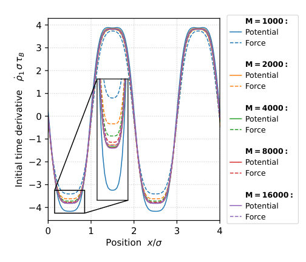
<figcaption class="paper-figure-caption"><b>Fig 1.</b> FIG. 1. Comparison of potential and force DDFT for the initial density profile ρ(x) σ = 0.35 sin(40 π x/L) + 0.45 in the absence of an external potential. Shown is the initial time derivative of the density ˙ρ1 σ τB, with τB = σ2/D0, for different spatial discretizations ∆x, as indicated in the label by the number of bins M. The predictions of potential and force DDFT converge as ∆x decreases. The periodic computational domain is [0, 40 σ); for example, M = 4000 bins correspond to ∆x = 0.01 σ. For clarity, only the interval [0, 4 σ] is displayed.</figcaption>
</figure>
<figure class="paper-figure-card">
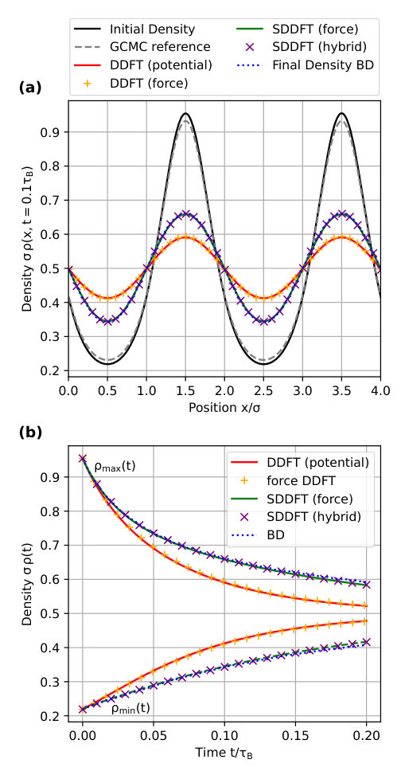
<figcaption class="paper-figure-caption"><b>Fig 2.</b> FIG. 2. (a) Comparison of BD, potential DDFT, force DDFT, and the force and hybrid variants of SDDFT at t = 0.1 τB during free expansion from the equilibrium BD density profile generated by the external potential in Eq. (37). Only the interval x ∈[0, 4 σ] of the periodic profile is shown for clarity. (b) Time evolution of the minimum and maximum values of the density profile for BD, potential DDFT, force DDFT, and both SDDFT variants. For force DDFT and hybrid SDDFT, only selected time points are shown for clarity. The spacing between the symbols therefore does not represent the numerical time step, which is much shorter.</figcaption>
</figure>
<figure class="paper-figure-card">
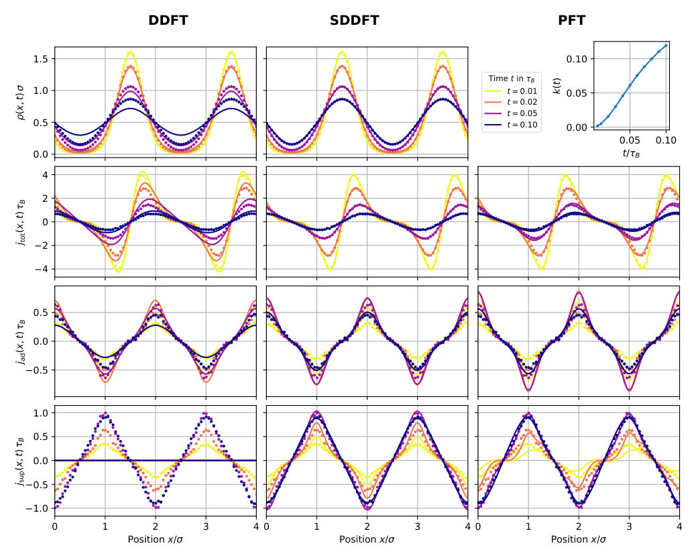
<figcaption class="paper-figure-caption"><b>Fig 3.</b> FIG. 3. Comparison of potential DDFT, force SDDFT, and PFT for the relaxation of a density profile after removal of the external potential defined in Eq. (37) at time t = 0. The system contains N = 20 particles in a periodic domain of length L = 40 σ, with V ext 0 = 3. The first row shows the self-consistent density evolution predicted by DDFT and SDDFT (lines), compared with BD data (dots). PFT does not provide a self-consistent density evolution here because k(t) is obtained from a fit to the BD density; the resulting k(t) is shown in the inset. The second row shows the total current, jtot = jid + jad + jsup, for DDFT, SDDFT, approximate PFT, and BD at the same times. The DDFT and SDDFT...</figcaption>
</figure>
<figure class="paper-figure-card">
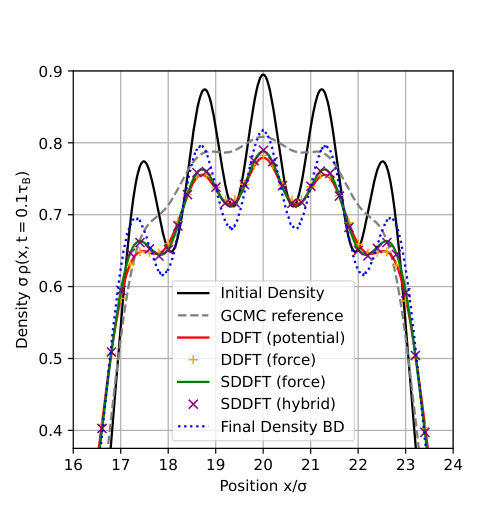
<figcaption class="paper-figure-caption"><b>Fig 4.</b> FIG. 4. Relaxation of N = 5 hard rods following the removal of the parabolic external potential V ext(x) = kBT</figcaption>
</figure>
</div>

<p><strong>Summary.</strong> This work develops and validates Superadiabatic Dynamical Density Functional Theory (SDDFT) for modeling the relaxation dynamics of 1D hard-rod fluids. By incorporating superadiabatic effects beyond the standard adiabatic approximation, SDDFT achieves quantitative agreement with Brownian Dynamics simulations. The study highlights the critical role of non-adiabatic terms in accurately describing non-equilibrium transport in soft matter systems.</p>
<p><strong>Why it may be interesting.</strong> While focused on classical fluids, the rigorous development of non-equilibrium dynamics using density functionals and the explicit separation of adiabatic vs. non-adiabatic (superadiabatic) contributions provides a powerful methodological template applicable to open quantum systems where memory effects are crucial.</p>
<details>
<summary>Detailed structure</summary>
<p><strong>Main problem.</strong> The paper addresses the challenge of accurately describing the non-equilibrium relaxation dynamics of interacting fluids, specifically focusing on capturing superadiabatic effects beyond standard adiabatic approximations.</p>
<p><strong>Main result.</strong> Superadiabatic Dynamical Density Functional Theory (SDDFT) shows excellent quantitative agreement with Brownian Dynamics simulations for the total current, suggesting it correctly captures non-adiabatic memory effects.</p>
<p><strong>Method.</strong> The authors employ advanced theoretical frameworks like SDDFT and Power Functional Theory (PFT), comparing them against molecular dynamics simulations.</p>
<p><strong>Model / system.</strong> The system studied is a one-dimensional (1D) fluid composed of hard rods, whose dynamics are modeled using the Smoluchowski equation. The theory builds upon classical DFT by incorporating higher-order correlations up to the three-particle level.</p>
<p><strong>Key observables.</strong> One-body density profile ($
ho(r, t)$), total current ($j_{tot}$), adiabatic current ($j_{ad}$), and superadiabatic current ($j_{sup}$).</p>
<p><strong>Important parameters / regimes.</strong> The comparison is sensitive to ensemble differences (canonical vs. grand canonical) and the degree of superadiabaticity.</p>
<p><strong>Assumptions / limitations.</strong> The primary approximations involve the closure relations used in SDDFT (at the three-particle level) and the functional ansatz used in PFT. A major limitation noted is the discrepancy arising from ensemble mismatch.</p>
<p><strong>Figures summary.</strong> Figures compare the time evolution of the total current ($j_{tot}$) and its components ($j_{ad}, j_{sup}$) across DDFT, SDDFT, PFT, and BD simulations, highlighting the success of SDDFT.</p>
<p><strong>Paper structure.</strong> The paper systematically develops SDDFT by extending DDFT to include three-particle correlations. It then compares this result against PFT and benchmark BD simulations, analyzing the contributions of the adiabatic and superadiabatic currents.</p>
</details>
<details>
<summary>Abstract</summary>
<p>We study the relaxation dynamics of a one-dimensional system of hard rods at the level of one-body fields using superadiabatic dynamical density functional theory, and compare the results with Brownian dynamics simulations. The theory uses the exact equilibrium excess free energy functional and incorporates superadiabatic effects from first principles via an adiabatic closure relation at the three-particle level. The predicted superadiabatic response shows very good agreement with simulation data, provided that initial-state ensemble differences between theory and simulations remain small. Furthermore, we evaluate an approximate power functional theory based on a velocity-gradient expansion, which also yields an accurate superadiabatic response, although requiring a memory kernel extracted from simulation data.</p>
</details>
<p><sub><a href="#top">↑ back to top</a></sub></p>

<p><a id="paper-2609.30125"></a></p>
<h3 id="transport-and-channel-normal-forms-for-clifford-interactions"><a href="http://arxiv.org/abs/2609.30125v1">Transport and Channel Normal Forms for Clifford Interactions</a></h3>
<p><strong>Authors:</strong> Xiong Chunhe, Kim Sunho, Zhang Qing-Hua, Fei Shao-Ming, Wu Junde<br>
<strong>Type:</strong> theory · <strong>Category:</strong> quantum information and computing · <strong>PDF:</strong> <a href="https://arxiv.org/pdf/2609.30125v1">https://arxiv.org/pdf/2609.30125v1</a><br>
<strong>Analysis basis:</strong> full PDF text, analyzed in chunks
<strong>Topic relevance:</strong> <code>correlated / nonlocal dissipation</code> <strong>3/5</strong> · <code>Keldysh / 2PI / non-Gaussian methods</code> <strong>2/5</strong> · <code>driven-dissipative phase transition</code> <strong>2/5</strong> · <code>methods for driven-dissipative</code> <strong>2/5</strong> · <code>non-equilibrium universality</code> <strong>2/5</strong> · <code>analog quantum simulation</code> <strong>1/5</strong> · <code>quantum measurements</code> <strong>1/5</strong></p>
<div class="figure-strip-hint">↔ Scroll figures horizontally</div>
<div class="paper-figures-scroll">
<figure class="paper-figure-card">
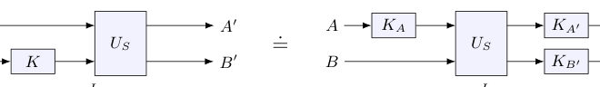
<figcaption class="paper-figure-caption"><b>Fig 1.</b> FIG. 2. Clifford transport at the four ports. When the homogeneous action of K commutes with R(S), the two circuits agree up to an overall phase. The environmental operation is replaced by one signal-input and two output Cliffords. The purification reference R is unchanged. The operation on B′ expresses unitary equivalence of the complementary output B′R and preserves its information leakage.</figcaption>
</figure>
</div>

<p><strong>Summary.</strong> This work characterizes quantum channels generated by Clifford interactions with an environment using tools from symplectic geometry. It develops a 'channel normal form' to classify these interactions based on their information-theoretic properties. The findings distinguish between different interaction types, providing new bounds on quantum and private capacities.</p>
<p><strong>Why it may be interesting.</strong> The rigorous mathematical framework connecting symplectic geometry to channel capacity provides powerful tools for understanding decoherence and information flow in open quantum systems, which is highly relevant to quantum optics and open quantum systems.</p>
<details>
<summary>Detailed structure</summary>
<p><strong>Main problem.</strong> The paper characterizes quantum information transmission through channels induced by bipartite Clifford interactions with an environment, extending concepts from positive discrete quantum convolution.</p>
<p><strong>Main result.</strong> It establishes a classification of these interactions, showing a key distinction: those locally equivalent to positive convolution yield entanglement-breaking channels, while others support noiseless quantum transmission.</p>
<p><strong>Method.</strong> The analysis employs symplectic geometry, Weyl operators, and the development of a 'channel normal form' to analyze the channel action $
ho oxtimes_S \sigma$.</p>
<p><strong>Model / system.</strong> The system models quantum channels defined by Clifford interactions involving signal input ($A$), environment input ($B$), and corresponding outputs ($A', B'$), analyzed using symplectic matrices $S \in 	ext{Sp}(V \oplus V)$.</p>
<p><strong>Key observables.</strong> Quantum and private capacities, the cross-ratio invariant, and the modified relative entropy of magic.</p>
<p><strong>Important parameters / regimes.</strong> The regularity of the interaction matrix $S$, and the structure of the environmental stabilizers.</p>
<p><strong>Assumptions / limitations.</strong> The analysis focuses specifically on Clifford interactions and assumes the initial independence of the signal and environment.</p>
<p><strong>Figures summary.</strong> Figure 1 illustrates the channel as a two-input/two-output system, and Figure 2 shows the Clifford transport identity, relating environmental change to signal-input and two output Cliffords.</p>
<p><strong>Paper structure.</strong> The paper develops the framework using symplectic geometry, proves identities for convolution and transport, establishes a transport criterion based on the cross-ratio, and finally derives capacity bounds using the modified relative entropy of magic.</p>
</details>
<details>
<summary>Abstract</summary>
<p>We study how Clifford interactions with a fixed environment determine quantum transmission, in a setting that extends positive discrete quantum convolution . We characterize when Clifford operations on the environment can be replaced by operations on the signal input and the two outputs, and classify the interactions under local Clifford transformations . For pure stabilizer environments, we determine the noiseless, dephasing, and completely depolarizing parts of the channel directly from the interaction and environmental stabilizers, obtaining its quantum and private capacities . This reveals a distinction between interactions: those locally equivalent to positive convolution produce entanglement-breaking channels for every pure stabilizer environment, whereas every other interaction in the class admits noiseless quantum transmission with a suitable pure stabilizer environment . For positive convolution, environmental Clifford transport also allows us to separate the stabilized coordinates of an arbitrary mixed environment . These coordinates carry only a classical label shared by the receiver and environment, so removing them preserves quantum and private capacities . The resulting channel reduction yields a private-capacity bound by the modified relative entropy of magic of the environmental state .</p>
</details>
<p><sub><a href="#top">↑ back to top</a></sub></p>

<p><a id="paper-2609.29430"></a></p>
<h3 id="quantum-heat-transport-and-effects-of-quantum-thermal-devices-in-noncommuting-coupled-spins"><a href="http://arxiv.org/abs/2609.29430v1">Quantum heat transport and effects of quantum thermal devices in noncommuting coupled spins</a></h3>
<p><strong>Authors:</strong> Yitian Chen, Junran Kong, Huan Liu, Chen Wang<br>
<strong>Type:</strong> theory · <strong>Category:</strong> statistical mechanics · <strong>PDF:</strong> <a href="https://arxiv.org/pdf/2609.29430v1">https://arxiv.org/pdf/2609.29430v1</a><br>
<strong>Analysis basis:</strong> full PDF text, analyzed in chunks
<strong>Topic relevance:</strong> <code>driven-dissipative phase transition</code> <strong>3/5</strong> · <code>non-equilibrium universality</code> <strong>3/5</strong> · <code>Keldysh / 2PI / non-Gaussian methods</code> <strong>2/5</strong> · <code>methods for driven-dissipative</code> <strong>2/5</strong> · <code>analog quantum simulation</code> <strong>1/5</strong> · <code>correlated / nonlocal dissipation</code> <strong>1/5</strong></p>
<div class="figure-strip-hint">↔ Scroll figures horizontally</div>
<div class="paper-figures-scroll">
<figure class="paper-figure-card">
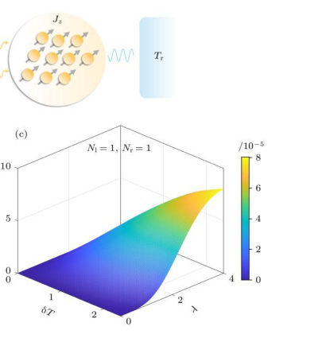
<figcaption class="paper-figure-caption"><b>Fig 1.</b> Fig. 1 (a) Schematic illustration of the noncommuting coupled spin model under finite thermodynamic bias; (b) steady-state energy current 𝑱𝐫 as a function of temperature bias δ𝑻 for various spin numbers (𝑵𝐥, 𝑵𝐫), with the spin-spin coupling strength set to 𝝀= 𝟎.𝟎𝟏; (c)</figcaption>
</figure>
<figure class="paper-figure-card">
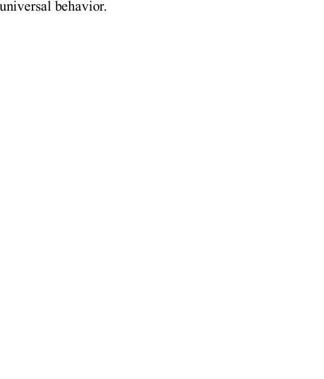
<figcaption class="paper-figure-caption"><b>Fig 2.</b> Fig. 2 Nonmonotonic behavior of the steady-state heat current 𝑱𝐫 with increasing temperature difference: (a) fixing 𝑵𝐥= 𝟐 while continuously increasing 𝑵𝐫; (b) fixing 𝑵𝐫= 𝟐 while continuously increasing 𝑵𝐥. Other system parameters are set as 𝜺𝐥= 𝜺𝐫= 𝟏, 𝝀= 𝟎.𝟎𝟏, 𝜶𝐥= 𝜶𝐫= 𝟎. 𝟎𝟎𝟏, 𝝎𝐜= 𝟏𝟎, 𝑻𝐥= 𝑻𝟎+ δ𝑻/𝟐, 𝑻𝐫= 𝑻𝟎−δ𝑻/𝟐, and 𝑻𝟎= 𝟏. 𝟐. In this study, λ and</figcaption>
</figure>
<figure class="paper-figure-card">
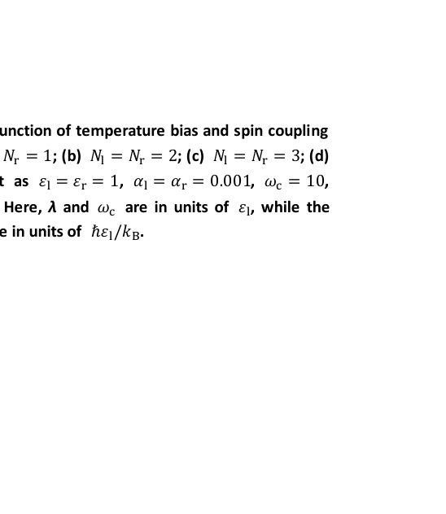
<figcaption class="paper-figure-caption"><b>Fig 3.</b> Fig. 4 Steady-state heat current 𝑱𝐫 versus temperature difference δ𝑻 at strong spin-spin</figcaption>
</figure>
<figure class="paper-figure-card">
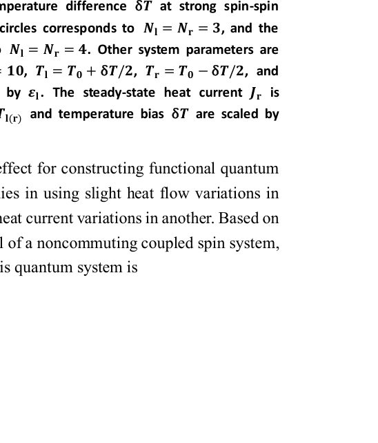
<figcaption class="paper-figure-caption"><b>Fig 4.</b> Fig. 5 Schematic representation of a quantum thermal transistor based on a noncommuting</figcaption>
</figure>
<figure class="paper-figure-card">
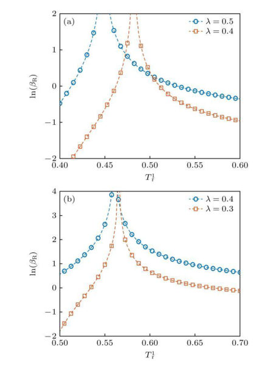
<figcaption class="paper-figure-caption"><b>Fig 5.</b> Fig. 6 Thermal amplification factor 𝛃𝐑 as a function of the gate-reservoir temperature 𝑻𝐫</figcaption>
</figure>
</div>

<p><strong>Summary.</strong> This paper studies heat transport in noncommuting coupled spin systems, treating them as quantum thermal devices. Using the master equation approach, the authors demonstrate that the spin coupling leads to phenomena like negative differential thermal conductance and significant thermal rectification. These effects suggest the system can function as a high-performance quantum thermal diode or transistor.</p>
<p><strong>Why it may be interesting.</strong> This work directly addresses non-equilibrium quantum thermodynamics, a core area connecting open quantum systems theory with macroscopic energy transport phenomena, making it highly relevant for AMO and open quantum systems researchers.</p>
<details>
<summary>Detailed structure</summary>
<p><strong>Main problem.</strong> The paper investigates quantum heat transport and the functionality of quantum thermal devices using noncommuting coupled spin systems.</p>
<p><strong>Main result.</strong> The system exhibits negative differential thermal conductance (NDTC) in the weak coupling regime and pronounced thermal rectification, enabling its use as a quantum thermal diode or transistor.</p>
<p><strong>Method.</strong> The analysis employs the quantum dressed-state master equation approach to calculate steady-state heat currents and thermal response functions.</p>
<p><strong>Model / system.</strong> The model is a noncommuting coupled spin system coupled to independent bosonic thermal reservoirs, analyzed in various limits including weak and strong spin-coupling regimes.</p>
<p><strong>Key observables.</strong> Steady-state heat current ($J_r$), Negative Differential Thermal Conductance (NDTC), Thermal Rectification Factor ($R$), and Thermal Amplification Factor ($eta_R$).</p>
<p><strong>Important parameters / regimes.</strong> Spin coupling strength ($\lambda$), temperature bias ($\delta T$), and the number of spins ($N_l, N_r$).</p>
<p><strong>Assumptions / limitations.</strong> The Born and Markov approximations are used, and the analysis often relies on the large-spin limit or weak coupling expansions.</p>
<p><strong>Figures summary.</strong> Figures illustrate the dependence of heat current on temperature difference (showing NDTC), the enhancement of the rectification factor with bias, and the schematic of the three-port quantum thermal transistor.</p>
<p><strong>Paper structure.</strong> The paper progresses from establishing the general quantum heat transport framework to applying it to the specific noncommuting spin model, deriving the dynamics via the master equation, and finally analyzing nonlinear transport phenomena like NDTC, rectification, and amplification in different parameter regimes.</p>
</details>
<details>
<summary>Abstract</summary>
<p>Quantum heat transport governs energy exchange processes and statistical laws in non-equilibrium quantum systems, and plays a pivotal role in quantum thermodynamics. We investigate the steady-state thermal transport of a noncommuting coupled spin system. We employ the quantum dressed master equation approach within the framework of open quantum system theory to accurately analyze the non-equilibrium dynamics, ensuring the validity of transport results in the strong coupling regime. Our results demonstrate that noncommuting spin coupling serves as a significant resource for modulating the nonlinearity of the heat current. Specifically, in the weak spin-coupling regime, the system exhibits robust negative differential thermal conductance (NDTC) across various spin numbers. By deriving analytical expressions for the heat current in both the single-spin and large-spin limits, we reveal that this NDTC behavior is governed by microscopic cycle fluxes. Physically, this arises because spin excitation channels induced by the cold reservoir are suppressed under a large temperature bias, thereby blocking energy exchange cycles. Conversely, in the strong spin-coupling and large temperature bias regime, the quantum system demonstrates pronounced thermal rectification. This high rectification efficiency originates from the unidirectional saturation of the heat current, rendering the system a promising candidate for high-performance thermal diodes. Furthermore, we extend the model to a three-terminal configuration to construct a quantum thermal transistor. By manipulating the temperature of the gate reservoir, we achieve efficient modulation and amplification of heat flow between the source and drain. The heat amplification factor is shown to far exceed unity in specific operating regions, confirming significant thermal amplification.</p>
</details>
<p><sub><a href="#top">↑ back to top</a></sub></p>

<p><a id="paper-2609.28789"></a></p>
<h3 id="condensates-a-bridge-to-quantum-gravity"><a href="http://arxiv.org/abs/2609.28789v1">Condensates: A Bridge to Quantum Gravity</a></h3>
<p><strong>Authors:</strong> Piero Nicolini<br>
<strong>Type:</strong> theory · <strong>Category:</strong> statistical mechanics · <strong>PDF:</strong> <a href="https://arxiv.org/pdf/2609.28789v1">https://arxiv.org/pdf/2609.28789v1</a><br>
<strong>Analysis basis:</strong> full PDF text, analyzed in chunks
<strong>Topic relevance:</strong> <code>analog quantum simulation</code> <strong>3/5</strong> · <code>driven-dissipative phase transition</code> <strong>2/5</strong> · <code>non-equilibrium universality</code> <strong>2/5</strong> · <code>Keldysh / 2PI / non-Gaussian methods</code> <strong>1/5</strong> · <code>methods for driven-dissipative</code> <strong>1/5</strong> · <code>quantum measurements</code> <strong>1/5</strong></p>
<div class="figure-strip-hint">↔ Scroll figures horizontally</div>
<div class="paper-figures-scroll">
<figure class="paper-figure-card">
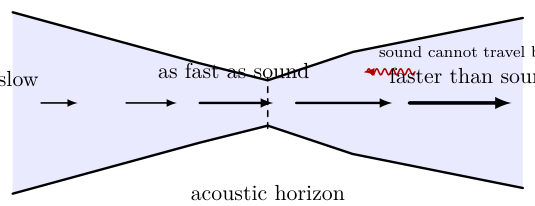
<figcaption class="paper-figure-caption"><b>Fig 1.</b> Figure 1: Sound trapped in a de Laval nozzle. The fluid flows from left to right and accelerates as the channel narrows (arrow length: flow velocity). At the narrowest point the flow speed equals the local speed of sound. Beyond that line, sound waves can no longer travel back: the red wave is dragged along by the flow. The dashed line is an acoustic horizon for phonons, the analogue of a black hole horizon for photons; sound propagation is governed by the acoustic metric (11).</figcaption>
</figure>
<figure class="paper-figure-card">
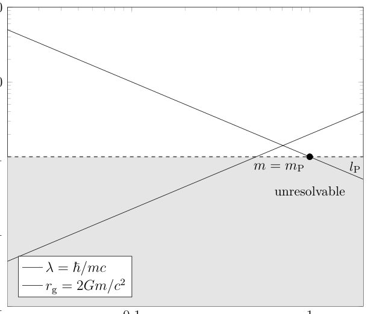
<figcaption class="paper-figure-caption"><b>Fig 2.</b> Figure 2: The particle–black hole confluence. The (reduced) Compton wavelength λ ∝ m−1 and the gravitational radius rg ∝m cross at the Planck mass. The shaded region below lP is fundamentally unresolvable: distances smaller than the Planck length cannot be measured in principle.</figcaption>
</figure>
<figure class="paper-figure-card">
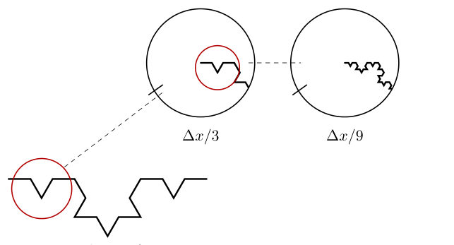
<figcaption class="paper-figure-caption"><b>Fig 3.</b> Figure 3: Self-similar structure of the Koch curve. The piece highlighted in the red circle looks smooth at resolution ∆x; magnified by three (∆x/3), it reveals the zigzag of the next iteration. Magnifying again (∆x/9) resolves the next level — and so on ad infinitum. The measured length grows by a factor 4/3 at every step without converging: the curve has no definite length, only a Hausdorff dimension DH = ln 4/ ln 3.</figcaption>
</figure>
<figure class="paper-figure-card">
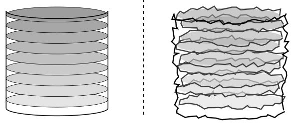
<figcaption class="paper-figure-caption"><b>Fig 4.</b> Figure 4: World-sheet of a quantized string as a foliation of closed loops along the area parameter A. Left: classical stack of smooth loops; the cylinder mantle is a resolvable two-dimensional sheet (DH = 2). Right: quantum fuzziness thickens the loops and the mantle into a three-dimensional fractal object (DH = 3).</figcaption>
</figure>
<figure class="paper-figure-card">
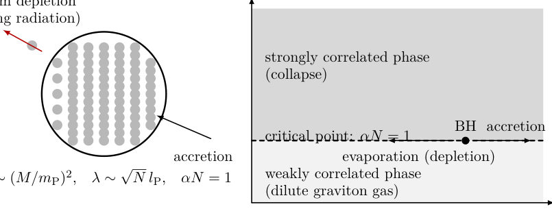
<figcaption class="paper-figure-caption"><b>Fig 5.</b> Figure 5: The black hole as a self-sustained graviton condensate. Left: the black hole is a Bose–Einstein condensate of N weakly interacting gravitons at maximal packing. The condensate is leaky: individual gravitons escape (quantum depletion, i.e. Hawking radiation), while others fall in (accretion). Right: the condensate always sits on the critical line αN = 1 between the weakly correlated phase (αN &lt; 1, dilute gas) and the strongly correlated one (αN &gt; 1, collapse). Depletion N →N −1 does not push the black hole below the line: since the condensate shrinks, the coupling rises as α = 1/(N −1), and the state glides along the critical point at every step of the evaporation cascade.</figcaption>
</figure>
</div>

<p><strong>Summary.</strong> This paper argues that the quest for quantum gravity should shift focus from unattainable high-energy colliders to condensed matter physics. It reviews models suggesting spacetime itself behaves like a quantum condensate, using analogies from black hole physics and critical phenomena to propose a path toward understanding quantum gravity.</p>
<p><strong>Why it may be interesting.</strong> It draws direct analogies between many-body physics concepts (like phase transitions and critical points) and fundamental spacetime structure, which is highly relevant for understanding emergent spacetime from quantum field theories.</p>
<details>
<summary>Detailed structure</summary>
<p><strong>Main problem.</strong> Quantum gravity remains inaccessible due to the Planck scale being vastly beyond current experimental reach, necessitating a paradigm shift in research focus.</p>
<p><strong>Main result.</strong> The authors argue that the solution to quantum gravity may lie in condensed matter physics, viewing spacetime itself as a condensate undergoing phase transitions.</p>
<p><strong>Method.</strong> The review synthesizes concepts from string theory, black hole thermodynamics, and condensed matter analogies to propose emergent gravity models.</p>
<p><strong>Model / system.</strong> The paper discusses modeling black holes as self-sustained graviton condensates, analyzing phase transitions between Riemannian and pre-geometric spacetimes, and utilizing acoustic analogues to test quantum gravity concepts.</p>
<p><strong>Key observables.</strong> Missing energy in particle detectors, distinctive black hole evaporation signatures (e.g., hadronic to leptonic ratio), and bounds on quantum gravity parameters ($eta$).</p>
<p><strong>Important parameters / regimes.</strong> Planck energy (E_P), the fundamental scale (M_F), the critical condensate parameter ($\alpha_N=1$), and the characteristic length scale (R).</p>
<p><strong>Assumptions / limitations.</strong> The core assumption is that gravity is an emergent phenomenon describable by condensed matter principles, and that condensed matter systems can serve as effective 'laboratories' for quantum gravity.</p>
<p><strong>Figures summary.</strong> Figure 5 illustrates the black hole as a graviton condensate, showing the transition across the critical line $\alpha_N = 1$.</p>
<p><strong>Paper structure.</strong> The paper progresses by identifying the experimental impasse, proposing condensed matter physics as the alternative laboratory, reviewing specific models (string-loop, black hole condensates), and concluding with the necessity of viewing spacetime as a condensate.</p>
</details>
<details>
<summary>Abstract</summary>
<p>Particle accelerators have carried fundamental physics to remarkable precision, but the Planck scale remains fifteen orders of magnitude beyond any foreseeable collider. We argue that this impasse is not a temporary shortfall but an insurmountable one. The way out runs through condensed matter physics: laboratory tests of generalized uncertainty relations, analog systems, and --- most provocatively --- frameworks in which spacetime itself is a condensate. We review the string-loop picture, in which quantization turns the world sheet into a three-dimensional fractal, the corpuscular description of black holes as self-sustained graviton condensates, and the phase-transition structure connecting the Riemannian phase to a pre-geometric one. The conclusion is deliberately provocative: the question of quantum gravity is no longer a question of energy, but of crossing the bridge.</p>
</details>
<p><sub><a href="#top">↑ back to top</a></sub></p>

<p><a id="paper-2609.30248"></a></p>
<h3 id="deep-thermalization-and-hilbert-space-ergodicity"><a href="http://arxiv.org/abs/2609.30248v1">Deep thermalization and Hilbert space ergodicity</a></h3>
<p><strong>Authors:</strong> Daniel K. Mark, Manuel Endres, Matteo Ippoliti, Wen Wei Ho, Soonwon Choi<br>
<strong>Type:</strong> theory · <strong>Category:</strong> statistical mechanics · <strong>PDF:</strong> <a href="https://arxiv.org/pdf/2609.30248v1">https://arxiv.org/pdf/2609.30248v1</a><br>
<strong>Analysis basis:</strong> full PDF text, analyzed in chunks
<strong>Topic relevance:</strong> <code>scars &amp; prethermalization</code> <strong>3/5</strong> · <code>Keldysh / 2PI / non-Gaussian methods</code> <strong>1/5</strong> · <code>analog quantum simulation</code> <strong>1/5</strong> · <code>correlated / nonlocal dissipation</code> <strong>1/5</strong> · <code>driven-dissipative phase transition</code> <strong>1/5</strong> · <code>methods for driven-dissipative</code> <strong>1/5</strong> · <code>non-equilibrium universality</code> <strong>1/5</strong> · <code>quantum measurements</code> <strong>1/5</strong></p>
<div class="figure-strip-hint">↔ Scroll figures horizontally</div>
<div class="paper-figures-scroll">
<figure class="paper-figure-card">
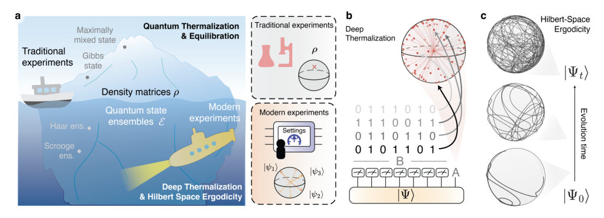
<figcaption class="paper-figure-caption"><b>Fig 1.</b> FIG. 1. New forms of quantum ergodicity. a. Quantum thermalization as probed by traditional experiments is only the tip of the iceberg of ergodicity in quantum many-body systems. In contrast, modern experiments can probe hidden, deeper forms of universality. In this Review, we discuss two phenomena discovered by these new measurement capabilities: deep thermalization and Hilbert space ergodicity. These describe universal features of quantum state ensembles generated through measurements of a bath or through time evolution, that go beyond the density matrices probed by traditional experiments (right column, adapted from Ref. [17]). b. Deep thermalization describes the emergence of universal...</figcaption>
</figure>
<figure class="paper-figure-card">
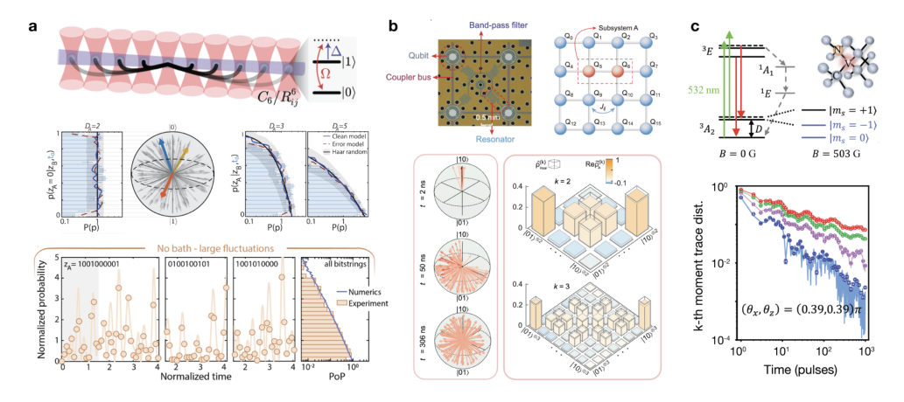
<figcaption class="paper-figure-caption"><b>Fig 2.</b> FIG. 3. Experimental evidence for deep thermalization and Hilbert space ergodicity. A number of experiments have been performed, including on neutral atom arrays [13, 32], superconducting qubits [33] and nitrogen vacancy (NV) centers [34]. a. Signatures of Haar randomness were originally observed in a Rydberg atom array (top), in which Hamiltonian quench evolution produces a state at infinite effective temperature. Middle: This is revealed by the probability-of-probabilities (PoP) of the conditional probabilities p(zA|zB) estimated from computational-basis measurements. Bottom: HSE is also revealed by PoP statistics, here of the global probabilities p(z) aggregated over time (Adapted from...</figcaption>
</figure>
<figure class="paper-figure-card">
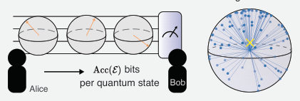
<figcaption class="paper-figure-caption"><b>Fig 3.</b> FIG. 4. Accessible information and Scrooge en- semble. a. The accessible information quantifies the classical information that Alice can send to Bob by transmitting quantum states from an ensemble. b. The Scrooge ensemble (of a density matrix ρ) has the smallest accessible information over ensembles shar- ing the same first moment ρ. Adapted from Ref. [17].</figcaption>
</figure>
<figure class="paper-figure-card">
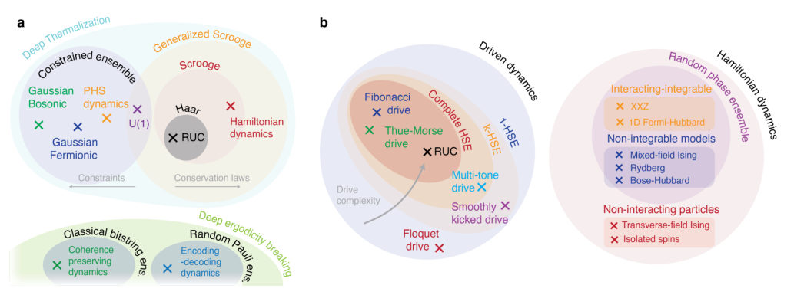
<figcaption class="paper-figure-caption"><b>Fig 4.</b> FIG. 5. Evolving landscape of deep thermalization and Hilbert space ergodicity. We catalog several examples of universal distributions discovered. a. Conservation laws or constrained dynamics result in different ensembles of states in deep thermalization, enumerated above. Recent work also discovers violations of deep thermalization, dubbed deep ergodicity breaking and associated transitions between these phases. b. Hilbert space ergodicity (HSE) manifests differently in driven dynamics and in time-independent Hamiltonian dynamics. Left: in the former, systems can uniformly explore Hilbert space (“complete HSE”), or they may only explore k-designs (“k-HSE”). Complete HSE can arise either...</figcaption>
</figure>
</div>

<p><strong>Summary.</strong> This review discusses deep thermalization and Hilbert space ergodicity, two advanced concepts describing how quantum systems achieve 'maximal randomness' in their state distributions. It moves beyond standard thermalization by analyzing higher-order statistical moments of quantum state ensembles. The work unifies these concepts using quantum information theory, providing a deeper understanding of quantum equilibration.</p>
<p><strong>Why it may be interesting.</strong> It provides a rigorous, information-theoretic framework for understanding how irreversible statistical mechanics emerges from reversible unitary quantum dynamics, which is central to modern AMO and open quantum systems research.</p>
<details>
<summary>Detailed structure</summary>
<p><strong>Main problem.</strong> The paper addresses generalizing concepts of ergodicity and maximum entropy from classical phase space to the quantum Hilbert space, particularly in the context of quantum many-body dynamics.</p>
<p><strong>Main result.</strong> Deep thermalization and Hilbert space ergodicity characterize the emergence of 'maximally random' quantum state ensembles, offering a refinement over standard quantum thermalization theories.</p>
<p><strong>Method.</strong> The authors review a unifying framework rooted in quantum information theory and maximum entropy principles, analyzing higher-order statistical moments of quantum state ensembles.</p>
<p><strong>Model / system.</strong> The study applies to general quantum many-body systems undergoing dynamics, considering both projected ensembles (from system-bath interactions) and temporal ensembles (from unitary time evolution).</p>
<p><strong>Key observables.</strong> Ensemble moments ($
ho^{(k)}_E$), trace distance ($\Delta^{(k)}$), and the comparison to the Haar random ensemble.</p>
<p><strong>Important parameters / regimes.</strong> The order of the moment ($k$), the nature of the constraints (e.g., energy conservation), and the system size/bath coupling.</p>
<p><strong>Assumptions / limitations.</strong> The analysis relies on the ability to probe fine-grained statistical information beyond the reduced density matrix, which is assumed possible via advanced quantum simulation techniques.</p>
<p><strong>Figures summary.</strong> Figure 1 contrasts traditional quantum thermalization with deep thermalization and HSE using quantum state ensembles. Figure 2 illustrates quantum state designs (Haar, k=1, 2, 3, ...), and Figure 3 shows experimental evidence for Haar randomness in various platforms.</p>
<p><strong>Paper structure.</strong> The review progresses from defining the limitations of standard thermalization to introducing the concepts of deep thermalization and HSE, detailing the mathematical framework using ensemble moments, and concluding with open questions and applications.</p>
</details>
<details>
<summary>Abstract</summary>
<p>Recent advances in quantum simulation have enabled the discovery of novel forms of universality in quantum many-body dynamics. In this Review, we discuss deep thermalization and Hilbert space ergodicity--two recently discovered phenomena characterized by the emergence of distributions of quantum states that are "maximally random" in a precise sense. They offer a new perspective on how irreversible statistical mechanics arises from reversible unitary quantum dynamics, going beyond conventional theories of quantum thermalization and equilibration. We review a unifying framework, rooted in quantum information theory and principles of maximum entropy, that explains the different forms of ergodicity which arise under various physical constraints. We discuss open questions and active research directions, including generalizations beyond ensembles of pure quantum states, phase transitions in deep thermalization tied to deeper forms of ergodicity-breaking, connections to broader topics in quantum thermalization and ergodicity, and applications in quantum information science, such as for benchmarking or tomography.</p>
</details>
<p><sub><a href="#top">↑ back to top</a></sub></p>

<p><a id="paper-2609.28680"></a></p>
<h3 id="altermagnetic-kondo-logic-via-floquet-symmetry-conversion"><a href="http://arxiv.org/abs/2609.28680v1">Altermagnetic Kondo Logic via Floquet Symmetry Conversion</a></h3>
<p><strong>Authors:</strong> Haojie Shen, Xinchen Zhou, Baigeng Wang, Rui Wang<br>
<strong>Type:</strong> theory · <strong>Category:</strong> strongly correlated electrons · <strong>PDF:</strong> <a href="https://arxiv.org/pdf/2609.28680v1">https://arxiv.org/pdf/2609.28680v1</a><br>
<strong>Analysis basis:</strong> full PDF text, analyzed in chunks
<strong>Topic relevance:</strong> <code>quantum measurements</code> <strong>3/5</strong> · <code>Keldysh / 2PI / non-Gaussian methods</code> <strong>2/5</strong> · <code>analog quantum simulation</code> <strong>2/5</strong> · <code>methods for driven-dissipative</code> <strong>2/5</strong></p>
<div class="figure-strip-hint">↔ Scroll figures horizontally</div>
<div class="paper-figures-scroll">
<figure class="paper-figure-card">
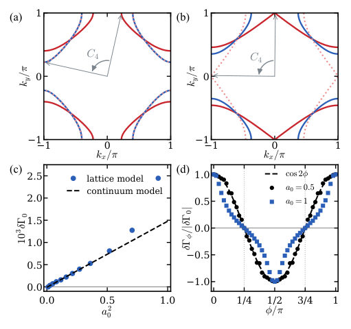
<figcaption class="paper-figure-caption"><b>Fig 1.</b> FIG. 2. Floquet engineering of the band structure and impurity broadening. (a),(b) Spin-resolved Fermi surfaces without and with a generic drive. (c),(d) δΓ0 versus the field amplitude and orienta- tion. Parameters are t = 1, µ = 1, M = 0.3, and V0 = 0.1. a0 = 0 for (a), a0 = 1, ϕ = 0 for (b), and ϕ = 0 for (c).</figcaption>
</figure>
<figure class="paper-figure-card">
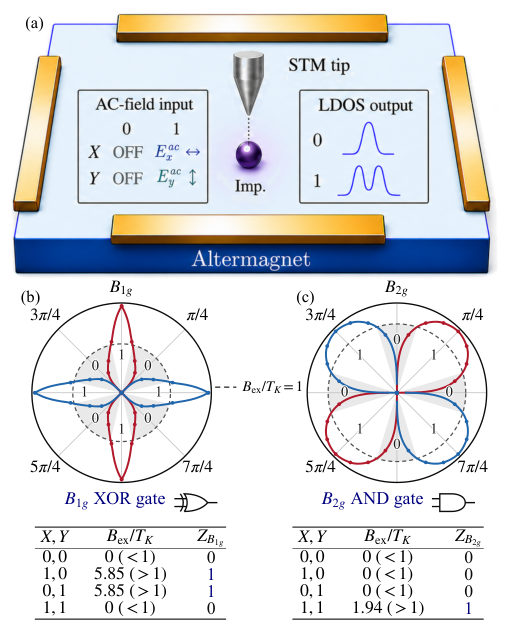
<figcaption class="paper-figure-caption"><b>Fig 2.</b> FIG. 4. Kondo logic gates. (a) AC fields along x and y serve as inputs, while the impurity LDOS splitting is the output. (b),(c) Split/unsplit regions and truth tables for B1g and B2g altermagnets, realizing XOR and AND gates, respectively.</figcaption>
</figure>
<figure class="paper-figure-card">
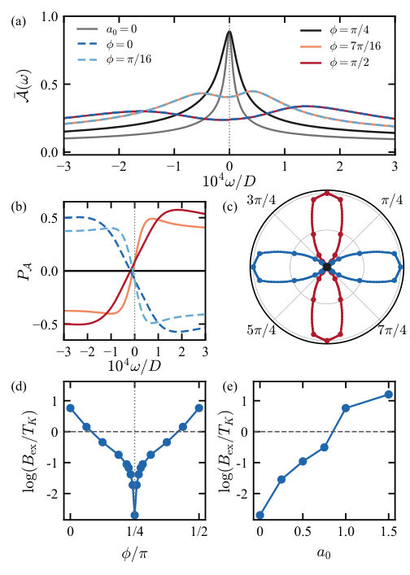
<figcaption class="paper-figure-caption"><b>Fig 3.</b> FIG. 3. Altermagnetic Kondo behavior for the B1g d-wave case. (a) Spin-averaged impurity spectra for different ϕ. (b) Spectral spin contrast PA(ω). (c) Polar plot of P + K, which inherits the B1g form factor. (d), (e) Effective field Bex versus orientation and amplitude. Bath parameters are the same as in Fig. 2; U/D = 0.015, ϵd/D = −0.010. Panels (a–d) use a0 = 1 except for the a0 = 0 reference in (a), and (e) uses ϕ = 0.</figcaption>
</figure>
</div>

<p><strong>Summary.</strong> This work introduces a novel mechanism to probe the hidden spin structure of altermagnets using an external AC electric field. By employing Floquet symmetry conversion, the authors make the altermagnetic form factor visible to a local impurity, leading to a field-controlled Kondo effect. This effect is powerful because it allows the system to function as a controllable quantum logic gate (e.g., XOR or AND) based on the underlying crystal symmetry.</p>
<p><strong>Why it may be interesting.</strong> The concept of using external fields to engineer spectroscopic signatures in strongly correlated materials is highly relevant to open quantum systems and quantum sensing, providing a pathway to read out otherwise hidden quantum information.</p>
<details>
<summary>Detailed structure</summary>
<p><strong>Main problem.</strong> Conventional Kondo resonance in altermagnets is blind to the host's momentum-dependent spin splitting due to symmetry cancellation in the local impurity spectrum.</p>
<p><strong>Main result.</strong> Applying an in-plane AC field converts this hidden altermagnetic splitting into a locally detectable channel, realizing a field-controllable Kondo effect that acts as a symmetry-resolved probe and logic gate.</p>
<p><strong>Method.</strong> The authors use Floquet symmetry conversion theory combined with advanced impurity spectroscopy techniques like NRG to analyze the field-renormalized Kondo resonance.</p>
<p><strong>Model / system.</strong> The system involves a local impurity coupled to an altermagnetic host characterized by momentum-dependent spin splittings (e.g., $d$-wave or $g$-wave form factors). The physics is analyzed using the Anderson impurity model mapped onto a Wilson chain.</p>
<p><strong>Key observables.</strong> The Kondo resonance splitting, spectral spin contrast ($P_A(\omega)$), and the resulting logic gate output state (split/unsplit resonance).</p>
<p><strong>Important parameters / regimes.</strong> AC field amplitude ($a_0$), field orientation ($\phi$), and the ratio of the induced splitting to the Kondo temperature ($B_{ex}/T_K$).</p>
<p><strong>Assumptions / limitations.</strong> The analysis relies on the leading high-frequency Floquet expansion and assumes the altermagnet has well-defined spin-resolved Fermi surfaces.</p>
<p><strong>Figures summary.</strong> Figures illustrate the mechanism of field-induced coupling, the resulting Kondo splitting dependence on field orientation ($\phi$), and truth tables demonstrating the realization of XOR and AND logic gates using different altermagnetic symmetries ($B_{1g}, B_{2g}$).</p>
<p><strong>Paper structure.</strong> The paper first establishes the blindness issue, then introduces Floquet conversion via an AC field, calculates the resulting Kondo splitting, and finally demonstrates its application in realizing specific, symmetry-controlled quantum logic gates (XOR, AND, XNOR).</p>
</details>
<details>
<summary>Abstract</summary>
<p>A common belief in Kondo physics is that a magnetic impurity can act as an efficient probe of key properties of its host bath. In altermagnets, however, this intuition fails in a symmetry-enforced way: the momentum-dependent spin splitting cancels in the local impurity spectrum, making a conventional single-impurity Kondo resonance essentially blind to the altermagnetic form factor. Here, we overcome this constraint by introducing Floquet symmetry conversion. We show that an in-plane AC field converts the hidden altermagnetic spin splitting into a locally detectable spin-dependent hybridization channel, which is further amplified by Kondo correlations into a novel altermagnetic Kondo effect. Remarkably, the Kondo splitting exhibits a nontrivial dependence on the field orientation and inherits the same crystalline form factor as the altermagnetic host, thereby serving as Kondo tomography of altermagnetic spin splitting. This field-controlled response further provides a natural route to symmetry-controlled Kondo logic gates. Our results establish a field-controllable altermagnetic Kondo effect, linking symmetry-resolved impurity spectroscopy to Kondo logic functionality.</p>
</details>
<p><sub><a href="#top">↑ back to top</a></sub></p>

<p><a id="paper-2609.29858"></a></p>
<h3 id="avoided-crossings-in-spin-boson-systems-consequences-for-adiabatic-state-preparation"><a href="http://arxiv.org/abs/2609.29858v1">Avoided crossings in spin-boson systems: consequences for adiabatic state preparation</a></h3>
<p><strong>Authors:</strong> Joona Marjamäki, Robert van Leeuwen, Riku Tuovinen<br>
<strong>Type:</strong> theory · <strong>Category:</strong> other · <strong>PDF:</strong> <a href="https://arxiv.org/pdf/2609.29858v1">https://arxiv.org/pdf/2609.29858v1</a><br>
<strong>Analysis basis:</strong> full PDF text, analyzed in chunks
<strong>Topic relevance:</strong> <code>analog quantum simulation</code> <strong>3/5</strong> · <code>Keldysh / 2PI / non-Gaussian methods</code> <strong>1/5</strong> · <code>correlated / nonlocal dissipation</code> <strong>1/5</strong> · <code>driven-dissipative phase transition</code> <strong>1/5</strong> · <code>methods for driven-dissipative</code> <strong>1/5</strong> · <code>non-equilibrium universality</code> <strong>1/5</strong> · <code>quantum measurements</code> <strong>1/5</strong></p>
<div class="figure-strip-hint">↔ Scroll figures horizontally</div>
<div class="paper-figures-scroll">
<figure class="paper-figure-card">
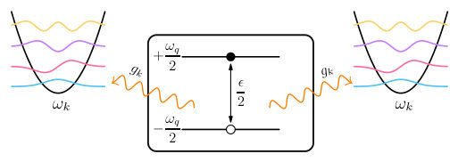
<figcaption class="paper-figure-caption"><b>Fig 1.</b> FIG. 1. Schematic of the spin-boson model: a two-level sys- tem coupled to a bath of harmonic oscillators.</figcaption>
</figure>
<figure class="paper-figure-card">
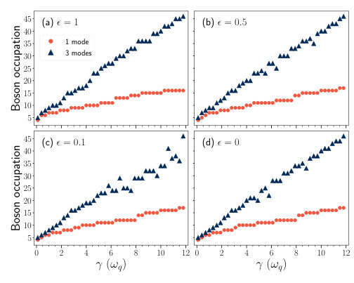
<figcaption class="paper-figure-caption"><b>Fig 2.</b> FIG. 2. Convergence of the bosonic Hilbert space truncation as a function of the effective coupling strength γ with differ- ent values of the tunneling amplitude ϵ for single and three bosonic modes.</figcaption>
</figure>
<figure class="paper-figure-card">
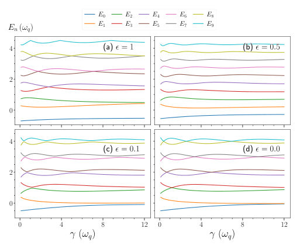
<figcaption class="paper-figure-caption"><b>Fig 3.</b> FIG. 3. Energy spectra for a single bosonic mode, showing a series of avoided crossings depending on ϵ and γ. The spec- trum is shifted by removing the linear contribution associated with the polaron shift −P</figcaption>
</figure>
<figure class="paper-figure-card">
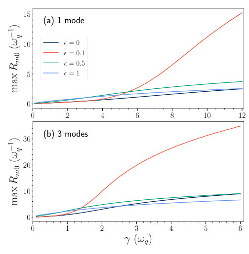
<figcaption class="paper-figure-caption"><b>Fig 4.</b> FIG. 4. Maximum of Rm0(s) on s ∈[0, 1] as a function of the coupling γ for m = 1, . . . , 9 with (a) single mode and (b) three modes.</figcaption>
</figure>
<figure class="paper-figure-card">

<figcaption class="paper-figure-caption"><b>Fig 5.</b> Figure 4 shows maxs∈[0,1] Rm0(s) as a function of γ with different values of the tunneling amplitude ϵ in the single- and three-mode cases. The results show similar behav- ior for different values of ϵ, except for ϵ = 0.1, where the values become significantly larger when the coupling increases. Since the adiabatic condition (6) requires t0 to exceed maxs Rm0(s), this signals that substantially longer switch-on times are needed to reach the ground state adiabatically in this parameter regime. We will re- turn to this in Sec. III, where the switch-on times are examined directly.</figcaption>
</figure>
</div>

<p><strong>Summary.</strong> This paper analyzes adiabatic state preparation in spin-boson systems by examining the role of avoided crossings in the many-body energy spectrum. Using exact diagonalization and time-dependent simulations, the authors show that the required switching time is dictated by the smallest spectral gaps. They highlight that local observables can reveal dynamics that are slower or behave differently than the overall ground-state energy evolution.</p>
<p><strong>Why it may be interesting.</strong> This work provides concrete, quantitative benchmarks for understanding how spectral features like avoided crossings limit the speed of quantum control protocols in open quantum systems, which is highly relevant to superconducting qubits and quantum simulation.</p>
<details>
<summary>Detailed structure</summary>
<p><strong>Main problem.</strong> The paper investigates the conditions required for reliable adiabatic state preparation in interacting quantum systems, focusing specifically on the role of avoided crossings in the many-body spectrum.</p>
<p><strong>Main result.</strong> Avoided crossings impose the strongest constraints on adiabatic preparation, dictating the minimum required switching times. Furthermore, local observables can exhibit non-monotonic behavior, suggesting that state preparation fidelity depends on the observable measured.</p>
<p><strong>Method.</strong> The authors combine exact diagonalization of the many-body spectrum with time-dependent simulations of adiabatic switching protocols to benchmark preparation success.</p>
<p><strong>Model / system.</strong> The system studied is the spin-boson model, which couples a two-level system (qubit) to a bosonic environment (bath). The Hamiltonian includes terms for the qubit, the bath, and the coupling interaction.</p>
<p><strong>Key observables.</strong> Adiabatic preparation success (comparing prepared state to exact ground state), many-body level spacings, local observables (e.g., Pauli matrix expectation values), and required switching times ($t_0$).</p>
<p><strong>Important parameters / regimes.</strong> Spin-boson coupling strength ($\gamma$), qubit tunneling amplitude ($\epsilon$), and the structure of the bosonic bath (single vs. three modes).</p>
<p><strong>Assumptions / limitations.</strong> The analysis uses a finite bosonic environment, allowing for exact diagonalization, which differs from standard continuum bath approximations. The study also notes that the required time depends on the specific observable used for convergence checking.</p>
<p><strong>Figures summary.</strong> Figures illustrate the single-mode energy spectrum showing avoided crossings, the dependence of required switching times on coupling strength ($\gamma$) for various $\epsilon$, and comparisons of state evolution using different observables ($\langle\sigma_z
angle$ vs $\langle\sigma_x
angle$).</p>
<p><strong>Paper structure.</strong> The paper first establishes the theoretical framework using the spin-boson model and the adiabatic condition. It then numerically simulates the switching process, comparing results for global quantities (ground state energy) versus local observables (Pauli expectation values) across different coupling regimes.</p>
</details>
<details>
<summary>Abstract</summary>
<p>Avoided crossings in the correlated many-body spectrum play a central role in determining the conditions for adiabatic state preparation in interacting quantum systems. We investigate this connection in finite spin-boson systems by combining exact diagonalization of the many-body spectrum with time-dependent simulations of adiabatic switching protocols. By comparing the adiabatically prepared state with the exact ground state, we determine the switching times required for reliable preparation as a function of the spin-boson coupling strength and bosonic mode structure. We show that regions of small many-body level spacings, associated with avoided crossings, impose the strongest constraints on adiabatic preparation and explain the observed dependence of the required switching times on the interaction strength. Furthermore, while the ground-state energy follows the overall spectral trends, local observables such as Pauli matrix expectation values exhibit additional non-monotonic behavior arising from coherent oscillations in finite systems. These findings can provide concrete benchmarks for both the theoretical treatment of open quantum systems and practical implementations in quantum simulation and qubit control.</p>
</details>
<p><sub><a href="#top">↑ back to top</a></sub></p>

<p><a id="paper-2609.28825"></a></p>
<h3 id="fundamental-physics-at-the-frontier-of-noisy-quantum-computation"><a href="http://arxiv.org/abs/2609.28825v1">Fundamental Physics at the Frontier of Noisy Quantum Computation</a></h3>
<p><strong>Authors:</strong> Nikita A. Zemlevskiy<br>
<strong>Type:</strong> theory · <strong>Category:</strong> quantum information and computing · <strong>PDF:</strong> <a href="https://arxiv.org/pdf/2609.28825v1">https://arxiv.org/pdf/2609.28825v1</a><br>
<strong>Analysis basis:</strong> full PDF text, analyzed in chunks
<strong>Topic relevance:</strong> <code>Keldysh / 2PI / non-Gaussian methods</code> <strong>3/5</strong> · <code>analog quantum simulation</code> <strong>3/5</strong> · <code>methods for driven-dissipative</code> <strong>2/5</strong> · <code>quantum measurements</code> <strong>1/5</strong></p>
<div class="figure-strip-hint">↔ Scroll figures horizontally</div>
<div class="paper-figures-scroll">
<figure class="paper-figure-card">
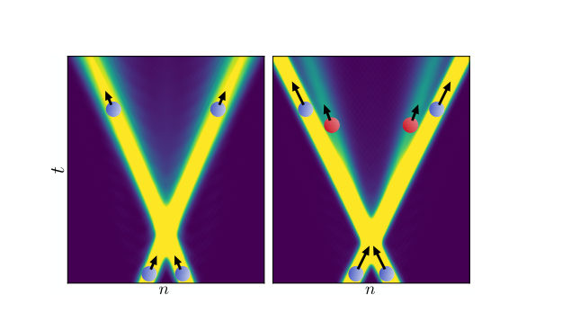
<figcaption class="paper-figure-caption"><b>Fig 1.</b> Figure 1.1: Low-energy and high-energy collisions. The heatmap shows the energy density in an</figcaption>
</figure>
<figure class="paper-figure-card">
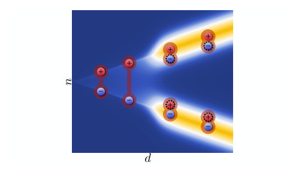
<figcaption class="paper-figure-caption"><b>Fig 2.</b> Figure 1.2: The formation of hadrons in the string breaking process. The energy density, indicated by</figcaption>
</figure>
<figure class="paper-figure-card">
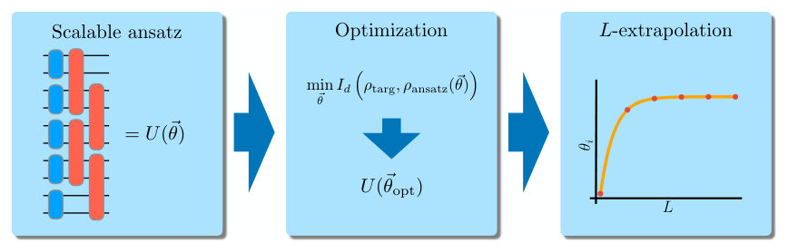
<figcaption class="paper-figure-caption"><b>Fig 3.</b> Figure 2.2: Scalable variational circuits. A parameterized ansatz with a scalable structure is chosen</figcaption>
</figure>
<figure class="paper-figure-card">
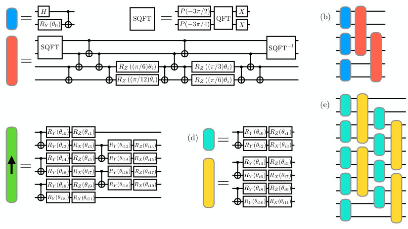
<figcaption class="paper-figure-caption"><b>Fig 4.</b> Figure 2.3: Circuit elements used for state preparation and time evolution in simulations of scattering.</figcaption>
</figure>
<figure class="paper-figure-card">
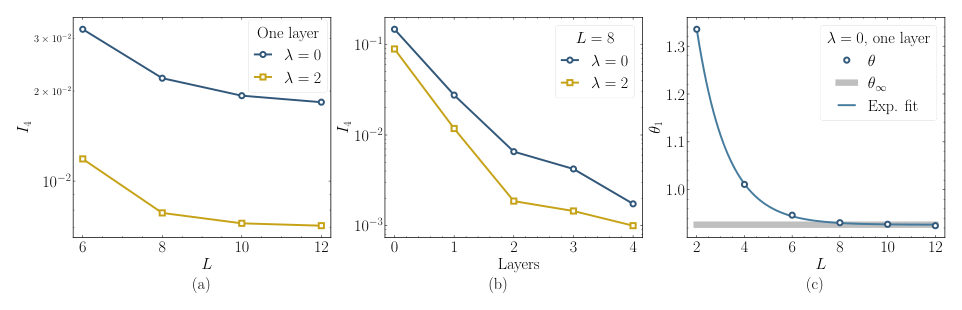
<figcaption class="paper-figure-caption"><b>Fig 5.</b> Figure 2.4: Convergence of wavefunction and state preparation parameters. Convergence is shown</figcaption>
</figure>
</div>

<p><strong>Summary.</strong> This thesis explores using quantum computation to probe fundamental physics, moving beyond classical methods by tackling hardware noise. It details advancements in simulating quantum field theory collisions, using entanglement to study particle interactions, and developing error management protocols for near-term quantum devices. The work marks practical progress toward fault-tolerant quantum simulations capable of scientific discovery.</p>
<p><strong>Why it may be interesting.</strong> It directly bridges fundamental high-energy physics questions (like particle production) with the cutting edge of quantum computation, providing concrete methods for error management and simulation scaling.</p>
<details>
<summary>Detailed structure</summary>
<p><strong>Main problem.</strong> To advance the investigation of fundamental physics using quantum computation while directly confronting the limitations imposed by noise in current quantum hardware.</p>
<p><strong>Main result.</strong> The work presents advancements in simulating quantum field theories, showing evidence for inelastic particle production, and developing error management frameworks for analog quantum simulations.</p>
<p><strong>Method.</strong> The research employs quantum simulation techniques, including wavepacket preparation, time evolution, and advanced error mitigation strategies like error detection in encoded quantum runs.</p>
<p><strong>Model / system.</strong> The study covers various physical models, including quantum field theories (e.g., simulating collisions), 1D Ising field theory, and the Schwinger model, utilizing quantum information-theoretic measures like entanglement and magic.</p>
<p><strong>Key observables.</strong> Inelastic particle production evidence, entanglement and magic, local observables, and quantum complexity measures.</p>
<p><strong>Important parameters / regimes.</strong> Effective circuit volumes, algorithmic and hardware uncertainties, and the degree of fault tolerance achieved.</p>
<p><strong>Assumptions / limitations.</strong> The primary challenge addressed is the noise limiting current quantum hardware, requiring continuous improvement in error management.</p>
<p><strong>Figures summary.</strong> Not specified in the provided notes, but the work details simulations across multiple chapters covering different physical models and techniques.</p>
<p><strong>Paper structure.</strong> The thesis is structured around three main advancements: 1) Quantum simulation of QFT collisions with new techniques; 2) Using quantum information measures (entanglement/magic) to probe dynamics; and 3) Presenting an error management framework for analog simulations toward fault tolerance.</p>
</details>
<details>
<summary>Abstract</summary>
<p>Quantum computing offers a new, orthogonal direction for investigating fundamental physics, extending beyond classical numerical methods and conventional observables. Realizing this potential requires directly confronting the noise limiting currently available quantum computers. Progress rests on advancing algorithms, interpreting their results, and managing their errors together. This thesis presents several advancements in the use of quantum simulation and quantum information to probe fundamental physics.   The first is in the use of quantum computers to simulate collisions in quantum field theories. Central to these simulations are new wavepacket preparation, time evolution, and error mitigation techniques, which allow for simulations with some of the largest effective circuit volumes to date. These methods enable the first quantum simulation providing numerical evidence for inelastic particle production, a key process in fundamental physics.   The second advancement centers on the role quantum-information-theoretic quantities play in physical processes. Beyond mere correlations with the physics of the process, entanglement and magic are shown to probe the interactions present in scattering and hadronization dynamics.   A precision study requires a complete quantification of algorithmic and hardware uncertainties, an outstanding goal as quantum simulations mature. The third advancement in this thesis addresses error management. A framework minimizing the effect of algorithmic errors in analog quantum simulations is presented. In a step toward fault tolerance, error detection in encoded quantum simulations is shown to improve estimation of local observables relative to unencoded runs.   Together, the developments in this thesis mark practical progress toward fault-tolerant quantum simulations of fundamental physics capable of scientific discovery.</p>
</details>
<p><sub><a href="#top">↑ back to top</a></sub></p>

<p><a id="paper-2609.29416"></a></p>
<h3 id="speed-up-of-passive-tracers-in-mixtures-with-active-chemical-reactions"><a href="http://arxiv.org/abs/2609.29416v1">Speed up of passive tracers in mixtures with active chemical reactions</a></h3>
<p><strong>Authors:</strong> Filipe C. Thewes, Chengjie Luo, David Zwicker<br>
<strong>Type:</strong> both · <strong>Category:</strong> statistical mechanics · <strong>PDF:</strong> <a href="https://arxiv.org/pdf/2609.29416v1">https://arxiv.org/pdf/2609.29416v1</a><br>
<strong>Analysis basis:</strong> full PDF text, analyzed in chunks
<strong>Topic relevance:</strong> <code>non-equilibrium universality</code> <strong>3/5</strong> · <code>Keldysh / 2PI / non-Gaussian methods</code> <strong>2/5</strong> · <code>methods for driven-dissipative</code> <strong>2/5</strong> · <code>correlated / nonlocal dissipation</code> <strong>1/5</strong> · <code>driven-dissipative phase transition</code> <strong>1/5</strong></p>
<div class="figure-strip-hint">↔ Scroll figures horizontally</div>
<div class="paper-figures-scroll">
<figure class="paper-figure-card">
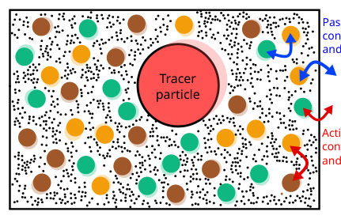
<figcaption class="paper-figure-caption"><b>Fig 1.</b> FIG. 1. We consider the diffusion of a passive tracer (large red disk) immersed in a multicomponent mixture of solute particles (colored disks) undergoing diffusion, passive chemi- cal reactions (blue arrows), and active reactions and exchange with reservoir (red arrows). An inert solvent (black dots) serves as the heat bath.</figcaption>
</figure>
<figure class="paper-figure-card">
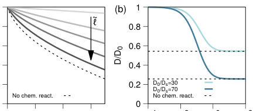
<figcaption class="paper-figure-caption"><b>Fig 2.</b> FIG. 2. Fast solutes and reactions reduce tracer slow-down. (a) Tracer diffusivity D normalized by bare diffusivity D0 as a function of inverse solute diffusivity Ds for different reaction- diffusion lengths ˜ℓ= ℓpass/κ. (b) D as a function of ˜ℓfor two values of Ds. (a, b) Model parameter is Ω2 t/(4πTΩ0κ3) = 0.1.</figcaption>
</figure>
<figure class="paper-figure-card">
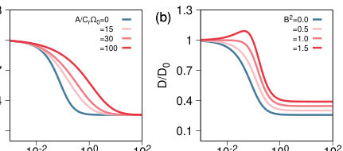
<figcaption class="paper-figure-caption"><b>Fig 3.</b> FIG. 3. Active chemical reactions can accelerate tracers. (a) Tracer diffusivity D normalized by bare diffusivity D0 as a function of the passive reaction-diffusion length ˜ℓ= ℓpass/κ for various activities A in the deterministic reaction flux at B = 0. (b) D as a function of ˜ℓfor various strengths B of FDT-breaking fluctuations at A = 0. (a, b) Model parameters are D0/Ds = 70 and Ω2 t/(4πTΩ0κ3) = 0.1.</figcaption>
</figure>
<figure class="paper-figure-card">
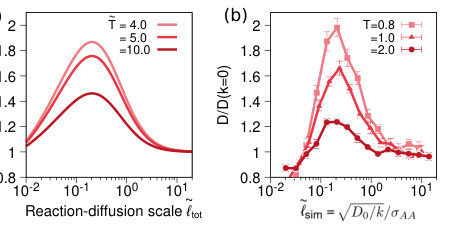
<figcaption class="paper-figure-caption"><b>Fig 4.</b> FIG. 4. Simulations confirm tracer acceleration. (a) Theo- retical prediction of tracer diffusivity D as a function of the reaction-diffusion length ˜ℓtot = p</figcaption>
</figure>
</div>

<p><strong>Summary.</strong> This work analyzes how chemical reactions modify the diffusion of passive tracers in mixtures. Theoretically, it shows that while passive reactions slightly restore diffusion, active reactions introduce non-equilibrium fluctuations that can actively speed up the tracers. The findings establish chemical activity as a controllable mechanism for manipulating mass transport in soft matter and biological contexts.</p>
<p><strong>Why it may be interesting.</strong> The work provides a quantitative framework for understanding how non-equilibrium driving forces (chemical activity) can fundamentally alter transport properties, which has implications for understanding energy dissipation and fluctuation-driven dynamics in complex physical systems.</p>
<details>
<summary>Detailed structure</summary>
<p><strong>Main problem.</strong> The paper investigates how chemical reactions, particularly active ones, influence the diffusion and mass transport of passive tracer particles in complex mixtures.</p>
<p><strong>Main result.</strong> Active chemical reactions can significantly enhance the tracer diffusivity beyond the limits imposed by passive interactions, an effect attributed to non-equilibrium fluctuations.</p>
<p><strong>Method.</strong> The study combines theoretical path-integral methods (Martin-Siggia-Rose action) with particle-based Brownian dynamics simulations.</p>
<p><strong>Model / system.</strong> The system models a multicomponent mixture containing passive tracers coupled to solute particles undergoing both passive and active chemical reactions within a solvent bath.</p>
<p><strong>Key observables.</strong> Mean Square Displacement (MSD), tracer diffusivity ($D_t$), and the deviation ($\delta$) of $D_t$ from the bare diffusivity ($D_0$).</p>
<p><strong>Important parameters / regimes.</strong> Reaction-diffusion length scales ($\ell_{	ext{pass}}, \ell_{	ext{tot}}$), density ($
ho$), and temperature ($T$).</p>
<p><strong>Assumptions / limitations.</strong> The theoretical analysis relies on approximations like the saddle-point method and linearizing the free energy functional; simulations assume specific interaction potentials (Lennard-Jones).</p>
<p><strong>Figures summary.</strong> Figures illustrate the components (tracers, solutes, reactions) and show that diffusivity enhancement ($D/D_0$) is non-monotonic and maximized at intermediate reaction length scales when active fluctuations are present.</p>
<p><strong>Paper structure.</strong> The paper develops the theoretical framework by deriving equations for density fields and tracer dynamics, calculates the diffusivity correction ($\delta$) for passive and active cases, and confirms these predictions using detailed Brownian dynamics simulations.</p>
</details>
<details>
<summary>Abstract</summary>
<p>Diffusivity of passive tracers in complex mixtures is widely relevant for industrial applications and for probing biological systems. Interactions with the surrounding medium typically generate a drag force that suppresses tracer diffusion, although self-propulsion can accelerate tracers via active fluctuations. Similar effects are not understood in mixtures with particle conversion and exchange, although these are particularly relevant in biological contexts, where actively driven reactions prevail. By studying a thermodynamically consistent model of chemical reactions in mixtures, we show that reactions provide an additional relaxation pathway that suppresses interaction-induced memory, reducing the drag on tracers and restoring their diffusivity toward the value expected in the absence of solutes. Moreover, active reactions generate nonequilibrium fluctuations that can push tracer diffusivity beyond this limit, an effect we confirm with particle-based simulations. Our results identify chemical activity as a distinct route to controlling mass transport and offer a framework for interpreting microrheology experiments in chemically active mixtures.</p>
</details>
<p><sub><a href="#top">↑ back to top</a></sub></p>

<p><a id="paper-2609.28834"></a></p>
<h3 id="fluctuation-response-relation-in-finite-size-noisy-coupled-phase-oscillators"><a href="http://arxiv.org/abs/2609.28834v1">Fluctuation--Response Relation in Finite-Size Noisy Coupled Phase Oscillators</a></h3>
<p><strong>Authors:</strong> Mrinal Sarkar, Yoshiyuki Y. Yamaguchi<br>
<strong>Type:</strong> theory · <strong>Category:</strong> statistical mechanics · <strong>PDF:</strong> <a href="https://arxiv.org/pdf/2609.28834v1">https://arxiv.org/pdf/2609.28834v1</a><br>
<strong>Analysis basis:</strong> full PDF text, analyzed in chunks
<strong>Topic relevance:</strong> <code>non-equilibrium universality</code> <strong>3/5</strong> · <code>Keldysh / 2PI / non-Gaussian methods</code> <strong>2/5</strong> · <code>methods for driven-dissipative</code> <strong>2/5</strong> · <code>driven-dissipative phase transition</code> <strong>1/5</strong></p>
<div class="figure-strip-hint">↔ Scroll figures horizontally</div>
<div class="paper-figures-scroll">
<figure class="paper-figure-card">
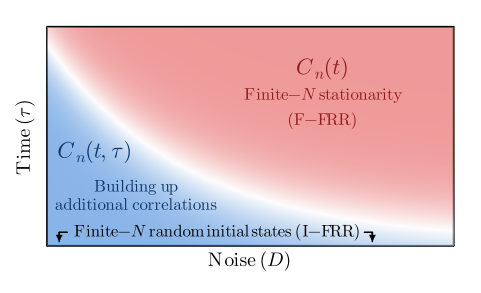
<figcaption class="paper-figure-caption"><b>Fig 1.</b> FIG. 1. Schematic crossover in the D (noise) - τ (time) plane within the nonsynchronized phase. As τ progresses, the tran- sient correlation function Cn(t, τ) (blue), for mode n, crosses over to the time-averaged, stationary correlation function Cn(t) (red); see the main text for their definitions. Additional correlations are generated by finite-size effects while relaxing to the finite-N stationary state, whereas Cn(t) approaches Cini n (t) := Cn(t, τ = 0) as D increases. Cn(t) satisfies the finite-size fluctuation-response relation (F-FRR), while the infinite-size FRR (I-FRR) is satisfied only by Cini n (t).</figcaption>
</figure>
<figure class="paper-figure-card">
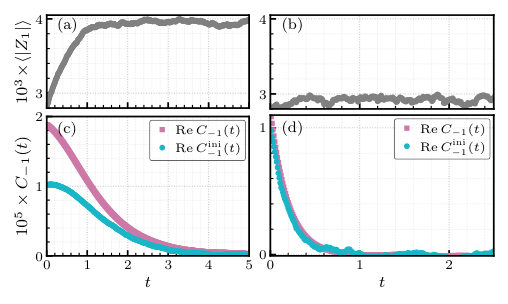
<figcaption class="paper-figure-caption"><b>Fig 2.</b> FIG. 2. Order-parameter magnitude and correlation func- tions in the absence of external perturbation (h = 0), for K = 1 at weak noise D = 0.5 [panels (a),(c)] and strong noise D = 5.5 [panels (b),(d)]. Top row: order-parameter magnitude ⟨|Z1(t)|⟩, relaxing from its initial value to a finite- N stationary value. Bottom row: real part of the two-point correlation functions C−1(t) (pink squares) and Cini −1(t) (cyan circles). At D = 0.5 the two correlation functions are clearly distinguishable over the whole observed time window, whereas at D = 5.5 they collapse onto a single curve.</figcaption>
</figure>
<figure class="paper-figure-card">
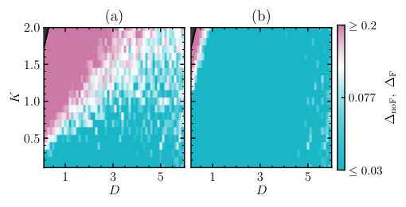
<figcaption class="paper-figure-caption"><b>Fig 3.</b> FIG. 5. Validity of the F-FRR across the (D, K) plane via the normalized time-domain residual ∆. Color encodes, on a log scale, (a) ∆noF and (b) ∆F: ∆≤0.1 (teal) indicat- ing good agreement and ∆≥0.2 (magenta) indicating poor agreement. The threshold is chosen to lie within the sta- tistical fluctuations of the simulations arising from the finite number of realizations [65]. The observation time Tobs = 5 is chosen so that the correlation has decayed to zero. The black region marks the synchronized phase with K &gt; Kc(D) and lies outside the domain of the theory.</figcaption>
</figure>
<figure class="paper-figure-card">
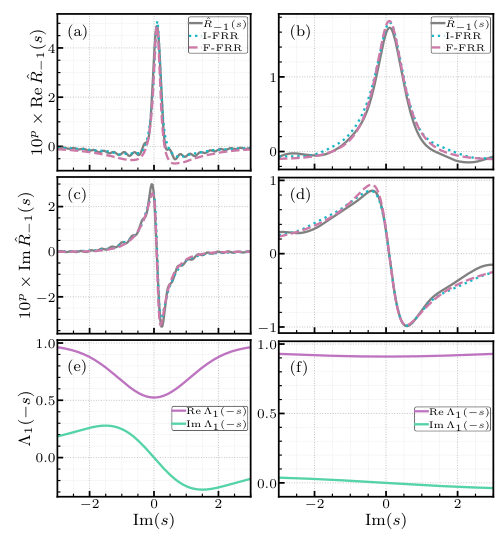
<figcaption class="paper-figure-caption"><b>Fig 4.</b> FIG. 3. Verification of fluctuation-response relations (FRRs) in the Laplace domain. Panels (a-d) show the measured re- sponse spectrum ˆR−1(s) (grey) with the right-hand side of I-FRR [Eq. (11), cyan dotted] and of F-FRR [Eq. (12), pink dashed] predictions, evaluated along s = Re(s) + i Im(s) with Re(s) = 0.125, at weak noise D = 0.5 [panels (a),(c)] and strong noise D = 5.5 [panels (b),(d)], for K = 1. Top row: Re ˆR−1(s); middle row: Im ˆR−1(s). Panels (e, f): real (pur- ple) and imaginary (green) parts of the spectrum function Λ1(−s) [Eq. (13)]. For clarity, the responses are shown as 10p × ˆR−1(s) with p = 2 in panels (a,c) and p = 3 in panels (b,d).</figcaption>
</figure>
<figure class="paper-figure-card">
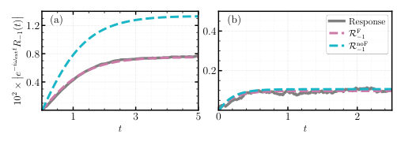
<figcaption class="paper-figure-caption"><b>Fig 5.</b> FIG. 4. Verification of F-FRR in the time domain. The di- rect measurement of |e−iωexttR−1(t)| (grey) is compared with the F-FRR prediction RF −1(t) (pink dashed), and also with RnoF −1 (t) (cyan dashed) that neglects the finite-size correction. Here, ωext = 0.1. The parameters are identical to those in Fig. 3: (a) D = 0.5 and (b) D = 5.5 with K = 1.</figcaption>
</figure>
</div>

<p><strong>Summary.</strong> This work derives and verifies two forms of the Fluctuation-Response Relation for noisy, finite-size coupled phase oscillators. It establishes that the finite-size counterpart (F-FRR) includes a correction factor absent in the infinite-size limit (I-FRR). This is crucial for accurately modeling real, finite physical systems operating far from equilibrium.</p>
<p><strong>Why it may be interesting.</strong> The rigorous derivation of the F-FRR provides a powerful, quantitative tool for analyzing non-equilibrium dynamics in complex systems, extending fundamental fluctuation theorems beyond the infinite-size limit.</p>
<details>
<summary>Detailed structure</summary>
<p><strong>Main problem.</strong> The paper addresses the fundamental, open problem of establishing the validity of Fluctuation–Response Relations (FRRs) in non-equilibrium, finite-size systems.</p>
<p><strong>Main result.</strong> Two distinct FRRs—an Infinite-size (I-FRR) and a Finite-size (F-FRR)—are derived for coupled phase oscillators, with the F-FRR incorporating a crucial finite-size correction factor.</p>
<p><strong>Method.</strong> The analysis involves linearizing the Dean-Kawasaki equation, solving the resulting equations using Fourier and Laplace transforms, and deriving the relations analytically.</p>
<p><strong>Model / system.</strong> The system is a general class of $N$ globally-coupled phase oscillators, modeled by a noisy mean-field equation resembling the Kuramoto model. The analysis focuses on the dynamics below the synchronization transition.</p>
<p><strong>Key observables.</strong> Order parameters ($Z_n(t)$), response function ($R_n(t)$), and various correlation functions ($C_{in,n}(t), C_n(t)$).</p>
<p><strong>Important parameters / regimes.</strong> Noise strength ($D$), coupling strength ($K$), and system size ($N$). Key regimes include the weak-coupling/strong-noise limits and the thermodynamic limit ($N 	o \infty$).</p>
<p><strong>Assumptions / limitations.</strong> The derivation relies on linearizing the dynamics and making assumptions about scale separation to distinguish response from finite-$N$ fluctuations.</p>
<p><strong>Figures summary.</strong> Figures illustrate the crossover of correlation functions between transient and stationary regimes, and compare measured response spectra against theoretical I-FRR and F-FRR predictions.</p>
<p><strong>Paper structure.</strong> The paper develops the theory by deriving the I-FRR and F-FRR in the Laplace domain, confirming the F-FRR's necessity via numerical simulations, and finally deriving the time-domain form using Kramers-Kronig relations.</p>
</details>
<details>
<summary>Abstract</summary>
<p>Fluctuation--response relations (FRRs) provide a fundamental relation between spontaneous fluctuations and the linear response to external perturbations, yet their validity in non-equilibrium systems remains an open problem. In a general class of noisy, finite-size, mean-field models of coupled phase oscillators, we reveal two types of FRRs in the incoherent phase below the synchronization transition. The first, corresponding to the infinite-size limit (I-FRR), involves the convolution between the external force and the correlation function in the time domain. The second, the finite-size counterpart (F-FRR), is governed by finite-size fluctuations and carries a correction factor: a spectrum function whose roots correspond to eigenvalues, or Landau poles, of the linear operator. The finite-size fluctuations are suppressed in the weak-coupling or strong-noise limits, and F-FRR reduces to I-FRR. Our analytical findings are verified by extensive numerical simulations.</p>
</details>
<p><sub><a href="#top">↑ back to top</a></sub></p>

<p><a id="paper-2609.28623"></a></p>
<h3 id="observation-of-universal-quantum-chaos-at-shallow-depths"><a href="http://arxiv.org/abs/2609.28623v1">Observation of Universal Quantum Chaos at Shallow Depths</a></h3>
<p><strong>Authors:</strong> Arman Sauliere, Guglielmo Lami, Hugo Lóio, Thomas J. Maldonado, Shashwat Kumar, Pedram Roushan, Andrea De Luca, Jacopo De Nardis<br>
<strong>Type:</strong> both · <strong>Category:</strong> statistical mechanics · <strong>PDF:</strong> <a href="https://arxiv.org/pdf/2609.28623v1">https://arxiv.org/pdf/2609.28623v1</a><br>
<strong>Analysis basis:</strong> full PDF text, analyzed in chunks
<strong>Topic relevance:</strong> <code>QC/QI experiment</code> <strong>3/5</strong> · <code>analog quantum simulation</code> <strong>2/5</strong> · <code>non-equilibrium universality</code> <strong>2/5</strong> · <code>Full counting statistics</code> <strong>1/5</strong></p>
<div class="figure-strip-hint">↔ Scroll figures horizontally</div>
<div class="paper-figures-scroll">
<figure class="paper-figure-card">
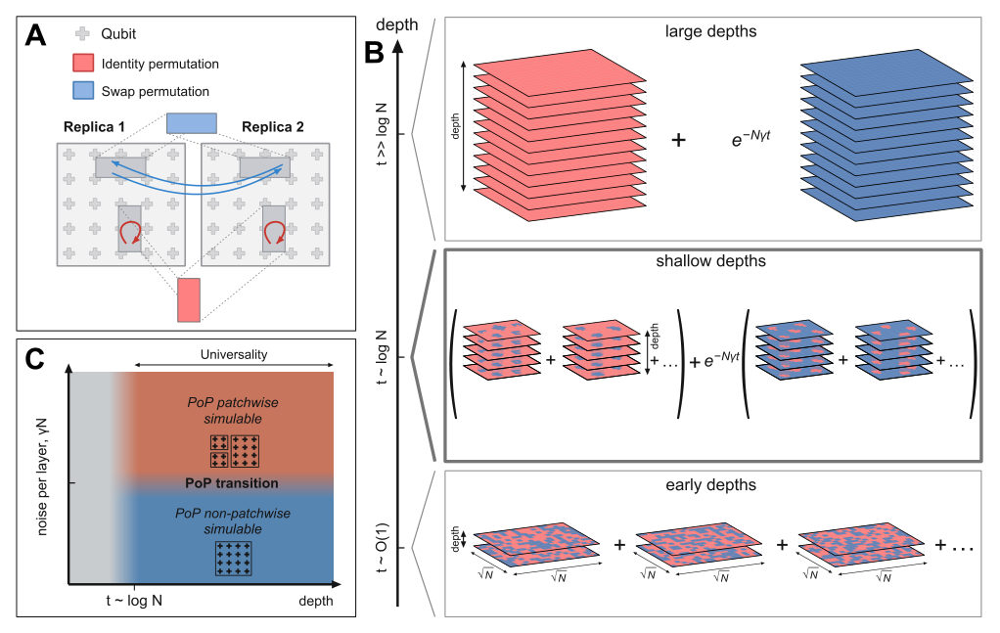
<figcaption class="paper-figure-caption"><b>Fig 1.</b> Fig. 1 | Shallow-depth universality from a replica statistical model. (A) Moments mk of the output-probability distribution are observables defined on k replicas of the system. Averaging over Haar-random gates expresses these observables in terms of permutations of the replicas. For two replicas, the possible permutations are identity (red) and swap (blue). (B) The circuit average maps the moments onto an effective statistical-mechanical model whose local degrees of freedom are permutations. The configurations shown correspond to a two-dimensional circuit at different depths t. At early depths, many configurations contribute and the statistics are non-universal. At logarithmic depth,...</figcaption>
</figure>
<figure class="paper-figure-card">
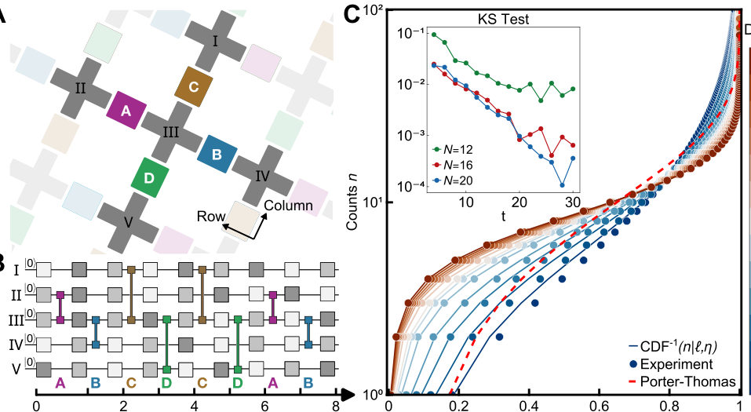
<figcaption class="paper-figure-caption"><b>Fig 2.</b> Fig. 2 | Shallow-depth count distributions. Panel (C) shows the bitstring counts obtained by sampling an N = 20-qubit processor at various circuit depths t for a 2D circuit (see Extended Data Fig. 1 for 1D geometries). A total of M = 10 × 2N</figcaption>
</figure>
<figure class="paper-figure-card">

<figcaption class="paper-figure-caption"><b>Fig 3.</b> Fig. 3 | Universal scaling parameters and logarithmic moment of the PoP distribution. (A) The fitted Thouless volume L(t) = ℓ(t)N compared with the growth rate inferred independently from the average excess half-system purity ∆PurA = PurA −21−∣A∣. ∣∂A∣denotes the size of the bipartition cut in the 2D system. ∣∂A∣= 5 for N = 20. (B) Accumulated noise strength η(t); dashed lines show fits to γNt. For N = 20, we find γ = (1.16 ± 0.01) × 10−3. (C) Measured average logarithm of the bitstring count ⟨log n⟩and its prediction E (log n∣ℓ, η) obtained from the fitted ℓand η. Colors denote different system sizes. The error bars in panels (A) and (B) are obtained from the inverse Fisher information...</figcaption>
</figure>
<figure class="paper-figure-card">

<figcaption class="paper-figure-caption"><b>Fig 4.</b> Fig. 4 | Noise-driven PoP transition. Kullback–Leibler divergence between the PoP of an N = 20 2D circuit and PoP distributions assembled from the independent partitions of the circuit shown on the right, plotted as a function of circuit depth for partitions composed of increasingly large patches (different shades of color). For a noise strength per layer γN = 0.02 &lt; 1/(2τ) (blue), with 1/(2τ) = 0.16 for the √</figcaption>
</figure>
<figure class="paper-figure-card">

<figcaption class="paper-figure-caption"><b>Fig 5.</b> Fig. 5 | Schematic representation of the relevant excitations at shallow depth in the statistical-mechanical description of the model: in 2D, there are tubular localized excitations for each permutation sector, whereas in 1D, the excitations are generic vertical domain walls.</figcaption>
</figure>
</div>

<p><strong>Summary.</strong> This work establishes that universal quantum chaos statistics appear early in quantum circuits, even before full random matrix behavior is reached. By analyzing the Probability-of-Probabilities (PoP) distribution, the authors extract key metrics like scrambling and entanglement growth directly from measured output statistics. This provides a practical, finite-depth diagnostic tool for characterizing the deep quantum properties of superconducting processors.</p>
<p><strong>Why it may be interesting.</strong> The connection between measurable output statistics (PoP) and fundamental quantum information concepts like scrambling and entanglement growth, derived from statistical mechanics principles, provides a powerful, non-invasive diagnostic tool for quantum hardware.</p>
<details>
<summary>Detailed structure</summary>
<p><strong>Main problem.</strong> To demonstrate that universal statistical laws characteristic of quantum chaos emerge at shallow depths in quantum circuits, retaining signatures of the underlying geometry and boundary topology.</p>
<p><strong>Main result.</strong> Universal Probability-of-Probabilities (PoP) distributions are established at finite depth, with distinct forms for different geometries (2D lattices, open/periodic chains), allowing access to scrambling and entanglement growth without full simulation.</p>
<p><strong>Method.</strong> The authors use theoretical derivations based on averaging over random circuit ensembles and relate the PoP moments to an effective classical statistical model involving permutations.</p>
<p><strong>Model / system.</strong> The study uses quantum circuits implemented on a programmable superconducting processor, modeling dynamics on 1D (open/periodic) and 2D lattices under random unitary evolution.</p>
<p><strong>Key observables.</strong> Probability-of-Probabilities (PoP) distribution, PoP moments ($m_k$), effective many-body Thouless length ($\ell(t)$), and accumulated incoherent errors ($\eta(t)$).</p>
<p><strong>Important parameters / regimes.</strong> Circuit depth ($t$), system size ($N$), and the ratio $\ell(t)/N$ which governs the transition between finite-depth and RMT regimes.</p>
<p><strong>Assumptions / limitations.</strong> The analysis relies on the shallow-depth, weak-noise scaling limit for the transfer matrix expansion, and that ensemble averages are representative of typical circuit realizations.</p>
<p><strong>Figures summary.</strong> Figures illustrate the replica statistical model, show PoP transitions based on depth and noise, and present count distributions for 1D circuits comparing measurements to theoretical fits for $\ell$ and $\eta$.</p>
<p><strong>Paper structure.</strong> The paper progresses from establishing the theoretical framework using replica methods to deriving distributions for specific geometries (1D/2D), extracting parameters ($\ell, \eta$) from measured statistics, and finally identifying noise-driven transitions.</p>
</details>
<details>
<summary>Abstract</summary>
<p>Universal statistical laws are a hallmark of quantum chaos, usually associated with the loss of spatial structure. Here we show, theoretically and experimentally, that universality emerges already at shallow depths in chaotic quantum circuits. We derive universal distributions of output-probability fluctuations and test them on a programmable superconducting processor. Two-dimensional lattices, open one-dimensional chains, and periodic rings exhibit distinct universality classes, retaining signatures of geometry and boundary topology before full random-matrix behavior emerges. Within each class, the distributions depend on only two parameters: an effective many-body Thouless length and the accumulated number of incoherent errors. Extracting these directly from measured bitstring frequencies provides access to scrambling, entanglement growth of the target state, and global fidelity, without reconstructing or classically simulating the implemented circuit. We also identify a noise-driven transition between output statistics retaining system-wide quantum correlations and those reproducible by independent small patches. Our results establish finite-depth universality as a practical tool for probing deep properties of quantum processors.</p>
</details>
<p><sub><a href="#top">↑ back to top</a></sub></p>

<p><a id="paper-2609.28768"></a></p>
<h3 id="a-kinetic-model-of-electron-transfer-at-the-electrode-electrolyte-interface-statistical-mechanics-and-electrochemical-aspects"><a href="http://arxiv.org/abs/2609.28768v1">A kinetic model of electron transfer at the electrode-electrolyte interface: Statistical mechanics and electrochemical aspects</a></h3>
<p><strong>Authors:</strong> Diego Veloza-Diaz, Robinson Cortes-Huerto, Pietro Ballone, Nancy C. Forero-Martinez<br>
<strong>Type:</strong> theory · <strong>Category:</strong> statistical mechanics · <strong>PDF:</strong> <a href="https://arxiv.org/pdf/2609.28768v1">https://arxiv.org/pdf/2609.28768v1</a><br>
<strong>Analysis basis:</strong> full PDF text, analyzed in chunks
<strong>Topic relevance:</strong> <code>methods for driven-dissipative</code> <strong>3/5</strong> · <code>Keldysh / 2PI / non-Gaussian methods</code> <strong>2/5</strong> · <code>quantum measurements</code> <strong>2/5</strong></p>
<div class="figure-strip-hint">↔ Scroll figures horizontally</div>
<div class="paper-figures-scroll">
<figure class="paper-figure-card">

<figcaption class="paper-figure-caption"><b>Fig 1.</b> FIG. 1: Schematic diagram of the half-cell model. (a) Reduction of cations at the cathode; (b)</figcaption>
</figure>
<figure class="paper-figure-card">

<figcaption class="paper-figure-caption"><b>Fig 2.</b> FIG. 2: Electron transfer rate through the surface of spherical metal electrodes of radius</figcaption>
</figure>
<figure class="paper-figure-card">

<figcaption class="paper-figure-caption"><b>Fig 3.</b> FIG. 3: (a) Resistance per unit area R as a function of ∆V computed using Eq. 13 for the</figcaption>
</figure>
<figure class="paper-figure-card">

<figcaption class="paper-figure-caption"><b>Fig 4.</b> FIG. 4: Free energy profile along the constrained path of electrons moving from the electrode</figcaption>
</figure>
<figure class="paper-figure-card">

<figcaption class="paper-figure-caption"><b>Fig 5.</b> FIG. 5: (a) Probability distribution P[Er] for the radial electric field Er on cations in fully</figcaption>
</figure>
</div>

<p><strong>Summary.</strong> This work presents a new simulation framework to model electron transfer at electrochemical interfaces, integrating electronic and ionic transport. By combining Monte Carlo and kinetic simulations, the model naturally yields fundamental electrochemical laws like the Butler-Volmer equation. This advances the field by providing a statistically rigorous approach to non-equilibrium electrochemistry.</p>
<p><strong>Why it may be interesting.</strong> The rigorous derivation of non-equilibrium thermodynamics (entropy production) and the coupling of quantum charge transfer rates to classical ionic dynamics provides a powerful framework for open quantum systems modeling.</p>
<details>
<summary>Detailed structure</summary>
<p><strong>Main problem.</strong> Developing a comprehensive theoretical/computational model for electron transfer at the electrode-electrolyte interface by consistently coupling electronic and ionic transport.</p>
<p><strong>Main result.</strong> The new model naturally derives key electrochemical concepts like Tafel and Butler-Volmer equations and entropy production with minimal ad-hoc assumptions.</p>
<p><strong>Method.</strong> A novel simulation approach combining Grand-Canonical Monte Carlo (GC-MC) for electrolyte state fixing with kinetic simulations for electron transfer.</p>
<p><strong>Model / system.</strong> The system is an electrode/electrolyte interface, modeled using a primitive electrolyte (hard-sphere plus Coulomb interaction) coupled to quantum mechanical charge transfer kinetics.</p>
<p><strong>Key observables.</strong> Tafel and Butler-Volmer equations, overpotential, entropy production, radial electric current density j_r(R_e), and probability distribution P(E_r) of the radial field.</p>
<p><strong>Important parameters / regimes.</strong> Surface charge density ($\sigma_e$), ionic strength, diffusion constant, and the intrinsic rate of electron transfer.</p>
<p><strong>Assumptions / limitations.</strong> The initial model assumes a rigid electrode and a primitive electrolyte; later extensions aim to incorporate fluctuating electric fields and feedback mechanisms.</p>
<p><strong>Figures summary.</strong> Figures illustrate the schematic of the half-cell model for reduction/oxidation, and show the dependence of overpotential ($\Delta V$) on current density ($j_r$) at constant surface charge ($\sigma_e$).</p>
<p><strong>Paper structure.</strong> The paper first establishes the basic model yielding fundamental electrochemical concepts, and then systematically extends the model's realism by incorporating complex feedback mechanisms, such as fluctuating electric fields affecting the charge transfer rate.</p>
</details>
<details>
<summary>Abstract</summary>
<p>A new simulation approach ({\it J. Chem. Phys.} {\bf 163}, 164113), based on the seamless combination of the electron transfer at the electrode/electrolyte interface with the charge and mass transport in electrolyte solutions, holds the promise to advance the comprehensive modeling of basic electrochemical devices such as electrolytic cells and batteries. The underlying model also includes a fully consistent treatment of structural, thermodynamic and statistical properties of the electrical double-layer at non-ideal electron-conducting interfaces. As a result, subtle aspects such as Tafel and Butler-Volmer equations, the overpotential concept, as well as (stationary) non-equilibrium features such as the entropy production, arise naturally from the model, with a minimum of ad-hoc assumptions and elaborations of the simulation results. We illustrate these aspects for a simple model of electrochemical interface, and discuss further improvements of the method meant to enhance its ability to model systems and phenomena of interest for electrochemistry. One such improvement, concerning the effect of fluctuating electric fields on the electron transfer rate, is explicitly developed.</p>
</details>
<p><sub><a href="#top">↑ back to top</a></sub></p>

<p><a id="paper-2609.30066"></a></p>
<h3 id="beyond-bond-gauge-exact-tensor-network-tangent-spaces-at-weighted-graph-states"><a href="http://arxiv.org/abs/2609.30066v1">Beyond Bond Gauge: Exact Tensor-Network Tangent Spaces at Weighted Graph States</a></h3>
<p><strong>Authors:</strong> Song Cheng<br>
<strong>Type:</strong> theory · <strong>Category:</strong> other · <strong>PDF:</strong> <a href="https://arxiv.org/pdf/2609.30066v1">https://arxiv.org/pdf/2609.30066v1</a><br>
<strong>Analysis basis:</strong> full PDF text, analyzed in chunks
<strong>Topic relevance:</strong> <code>analog quantum simulation</code> <strong>3/5</strong> · <code>methods for driven-dissipative</code> <strong>3/5</strong></p>
<div class="figure-strip-hint">↔ Scroll figures horizontally</div>
<div class="paper-figures-scroll">
<figure class="paper-figure-card">

<figcaption class="paper-figure-caption"><b>Fig 1.</b> Figure 1: Kernel and image from overlapping closed neighborhoods, on the six-vertex graph V = {a, b, c, d, x, y}, EG = {ab, ac, ad, bc, bd, ax, by} of Corollary 11 at the qubit graph-state point (all edge phases π). Shaded regions are N[a] (blue) and N[b] (orange). (a) The support S = {c, d} lies in both, so the site variations ξa,S and ξb,S produce the same physical vector χSψ; their difference is a non-bond kernel direction, the diamond motif of Fig. 3. (b) The leaves x, y lie in no common closed neighborhood, so no tensor variation produces a character whose support contains both. The edge error XaXbψ is such a character and is missing from TA.</figcaption>
</figure>
<figure class="paper-figure-card">

<figcaption class="paper-figure-caption"><b>Fig 2.</b> Figure 2: Bond gauge and its generator dependencies at q = 2. (a) The bond action ΦA maps generator coefficients to tensor variations, and J⊥maps those to projective physical variations. (b) Inserting G = etXe∗and G−1 on the oriented edge e∗: c →f of panel (c) changes the tensors, δAc = AcXe∗, δAf = −Xe∗Af, but not the state: JAΦA(Xe∗) = 0. (c) A spanning tree T (blue) and its complement (orange, dashed). Each non-tree edge closes a fundamental cycle; scalar generators Xe = ±I along that cycle cancel at every vertex, giving the E −N + 1 = 2 scalar dependencies of Eq. (6). Non-bond kernel relations are illustrated in Fig. 3.</figcaption>
</figure>
<figure class="paper-figure-card">

<figcaption class="paper-figure-caption"><b>Fig 3.</b> Figure 3: The three minimal generating types of non-bond kernel relations on periodic regular-polygon tilings, at q = 2 (Theorem 3). In each panel two site variations (blue ± centers) generate the same physical vector χSψ on the orange support S, so their difference lies in ker JA. (a) One of the five triangle relations, Eq. (29). (b) One of the two chordless-square relations, Eq. (30): the opposite centers b, d generate the character on {a, c}. (c) One of the four diamond relations additional to those of its two triangles, Eq. (31). Dashed stubs are retained external virtual legs; physical legs are suppressed.</figcaption>
</figure>
<figure class="paper-figure-card">

<figcaption class="paper-figure-caption"><b>Fig 4.</b> Figure 4: All eleven Archimedean lattices and their complete WGS non-bond nullity at q = 2. Panels (a)–(k) show planar schematic patches, with vertex configurations below; drawn edges need not have equal length. Colored subgraphs mark representative triangles, chordless squares, and shared-edge diamonds. Panel (l) gives the exact q = 2 density as stacked contributions 5F3/N, 2F4/N, and 4E33/N in the same colors; the diamond contribution is additional to its triangles. Open circles are independent brute-force counts of the support union, one per periodic torus: sizes L = 5, 8 for (a)–(d) and construction parameters s = 7, 8 for (e)–(k), with cell conventions in Appendix E; small horizontal...</figcaption>
</figure>
<figure class="paper-figure-card">

<figcaption class="paper-figure-caption"><b>Fig 5.</b> Figure 5: Time evolution of the twelve-qubit periodic kagome graph state under HXX with unit couplings and ℏ= 1. (a) Survival probability. (b) Mean graph stabi- lizer N −1 P</figcaption>
</figure>
</div>

<p><strong>Summary.</strong> This work provides an exact, first-order analysis of the representation freedom within Weighted Graph State tensor networks. It precisely identifies the mathematical structures responsible for parameter redundancy (the non-bond kernel) and the physical limitations (missing directions) of the state space. This is crucial for understanding the underlying mathematical constraints governing quantum states in condensed matter physics.</p>
<p><strong>Why it may be interesting.</strong> The rigorous characterization of the tangent space and gauge redundancies in tensor network representations provides deep insights into the mathematical structure of quantum states, which is fundamental for simulating strongly correlated electron systems.</p>
<details>
<summary>Detailed structure</summary>
<p><strong>Main problem.</strong> The paper investigates the first-order representation freedom of tensor networks, specifically determining which tensor variations leave the state unchanged without being simple bond gauges, and identifying unreachable physical directions.</p>
<p><strong>Main result.</strong> For Weighted Graph States, the non-bond kernel is generated by motifs like triangles and chordless squares, and the analysis quantifies the rank drop associated with gauge completeness across various periodic tilings.</p>
<p><strong>Method.</strong> The authors use differential calculus on the parameter space of tensor networks, analyzing the kernel and image of the contraction differential map to characterize redundant parameters and the physical tangent space.</p>
<p><strong>Model / system.</strong> The model is the Weighted Graph State (WGS) represented by PEPS (Projected Entangled Pair States) tensor networks, which are used to describe quantum states relevant to measurement-based quantum computation.</p>
<p><strong>Key observables.</strong> Non-bond kernel generators, physical tangent space dimension, gauge completeness rank drop, and missing nearest-neighbor XX/YY directions.</p>
<p><strong>Important parameters / regimes.</strong> Physical and bond dimension $q \ge 2$, and the structure of the underlying graph (e.g., honeycomb, square tori).</p>
<p><strong>Assumptions / limitations.</strong> The analysis is performed at a fixed, generic representation (first-order differential level) and relies on specific periodic boundary conditions.</p>
<p><strong>Figures summary.</strong> Figures illustrate the structure of the kernel (redundant parameters) and missing directions (uncovered support) using graph motifs and vertex neighborhoods.</p>
<p><strong>Paper structure.</strong> The paper proceeds by defining the differential map for WGS, calculating the kernel (redundancy) and the image (physical space), and then characterizing the non-bond nullity and the missing directions separately.</p>
</details>
<details>
<summary>Abstract</summary>
<p>For normal PEPS, the fundamental theorem settles at the finite level whether virtual-bond gauge exhausts a tensor network's representation freedom. We ask the first-order question at a fixed representation, from both sides of the differential: which tensor variations leave the state unchanged without being bond gauges, and which physical directions can no variation reach? We answer both exactly for weighted graph state (WGS) tensor networks with equal physical and bond dimension $q\ge2$, which include the graph-state resources of measurement-based quantum computation. Dividing a single-tensor variation by the nonvanishing amplitude turns it into an arbitrary function on the closed neighborhood of its vertex. Overlapping neighborhoods give the complete kernel. Its non-bond part is generated on periodic regular-polygon tilings by triangles, chordless squares, and edge-sharing diamonds. Under stated period conditions, generic gauge completeness on all thirty-nine families studied identifies this nullity as a WGS rank drop: for thirty-three families at every $q\ge2$, and for six at $q=2$. Supports outside every neighborhood give the missing directions: at qubit graph states on the eleven Archimedean tilings every nearest-neighbor $XX$ and $YY$ direction is missing, including on honeycomb, where the non-bond kernel is empty. On large honeycomb and square tori, small nonzero coherent $XX$ errors leave the bond-two PEPS set on the same graph. Removing redundant parameters and supplying missing directions are therefore distinct operations.</p>
</details>
<p><sub><a href="#top">↑ back to top</a></sub></p>

<p><a id="paper-2609.28634"></a></p>
<h3 id="non-stabilizerness-and-entanglement-in-math235math-dimensional-su2-lattice-gauge-theory-using-tensor-networks"><a href="http://arxiv.org/abs/2609.28634v1">Non-stabilizerness and entanglement in $(2+1)$-dimensional SU(2) lattice gauge theory using tensor networks</a></h3>
<p><strong>Authors:</strong> Raghav G. Jha, Jaber I. Taher, Muhammad Asaduzzaman, Goksu C. Toga, Bojko N. Bakalov, Alexander F. Kemper<br>
<strong>Type:</strong> theory · <strong>Category:</strong> numerical methods · <strong>PDF:</strong> <a href="https://arxiv.org/pdf/2609.28634v1">https://arxiv.org/pdf/2609.28634v1</a><br>
<strong>Analysis basis:</strong> full PDF text, analyzed in chunks
<strong>Topic relevance:</strong> <code>analog quantum simulation</code> <strong>3/5</strong> · <code>methods for driven-dissipative</code> <strong>3/5</strong></p>
<div class="figure-strip-hint">↔ Scroll figures horizontally</div>
<div class="paper-figures-scroll">
<figure class="paper-figure-card">

<figcaption class="paper-figure-caption"><b>Fig 1.</b> FIG. 1. Single dressed-site composed of matter site and semi- links shown for a two-dimensional lattice where we have three types of dressed sites — bulk, edge, and corner corresponding to four, three, and two semi-links/rishons (shown at top). An example of 4 × 4 lattice using these dressed sites and the bipartition (black dashed) we use for computation of entropy and magic observables. The site indices in the column-major pattern are also shown. See Appendix A for additional details.</figcaption>
</figure>
<figure class="paper-figure-card">

<figcaption class="paper-figure-caption"><b>Fig 2.</b> FIG. 2. Coupling dependence and bond-dimension convergence on the 4 × 4 lattice with χ = 32 (#, thin dashed), 64 (G#, thick dashed), and 96 ( , solid lines) at fixed m = 1. The vertical dashed line marks the gauge–matter delocalization crossover at g2 ⋆∼1. (a) Gauge observables: ⟨E2⟩and Re⟨Bp⟩ both increase (while ⟨B2⟩decreases as per Eq. (16)) as we approach g2 →0. The plaquette-based observables carry the strongest χ-dependence. (b) Non-stabilizerness measures M2, 5M NL 2 (purple), and −5 log2(1 −4F) [Eq. (12)] (orange). We have scaled non-local observables by factor of 5 for improved visibility. (c) Ground state energy density ε. (d) Gauge- invariant entanglement entropy S across the...</figcaption>
</figure>
<figure class="paper-figure-card">

<figcaption class="paper-figure-caption"><b>Fig 3.</b> FIG. 3. The individual contributions to the total entanglement entropy defined in Eq. (13) with largest χ for both 4 × 4 (top panel) and 6 × 6 lattice (lower panel) with fixed m = m0a = 1. The quantum part of the entropy has been scaled by 10× for improved visibility.</figcaption>
</figure>
<figure class="paper-figure-card">

<figcaption class="paper-figure-caption"><b>Fig 4.</b> FIG. 4. Coupling dependence and bond-dimension convergence on the 6×6 lattice with χ = 64 (#, thin dashed), and χ = 128 ( , solid lines) versus g2 at fixed m = 1. The vertical dashed line marks the gauge–matter delocalization crossover at g2 ⋆∼1. (a) Gauge observables: ⟨E2⟩and Re⟨Bp⟩both increase as we approach g2 →0. (b) Non-stabilizerness measures M NL 2 , and −log2(1 −4F) [Eq. (12)]. (c) Ground state energy density ε. (d) Gauge-invariant entanglement entropy S across the central cut.</figcaption>
</figure>
</div>

<p><strong>Summary.</strong> This work analyzes entanglement and non-stabilizerness in a $(2+1)$D $\mathrm{SU}(2)$ lattice gauge theory using tensor networks. The authors establish that non-local entanglement measures, such as non-local magic, are superior diagnostics because they are invariant under local basis choices. They demonstrate that these measures provide a sharp probe of the gauge-matter delocalization crossover in the system.</p>
<p><strong>Why it may be interesting.</strong> The focus on entanglement measures invariant under local basis choices is highly relevant for quantum information theory applied to condensed matter, as it suggests physically meaningful diagnostics that are robust against computational encoding artifacts.</p>
<details>
<summary>Detailed structure</summary>
<p><strong>Main problem.</strong> The study investigates non-stabilizerness (magic) and entanglement in the ground state of a $(2+1)$-dimensional $\mathrm{SU}(2)$ lattice gauge theory.</p>
<p><strong>Main result.</strong> The non-local magic and anti-flatness are shown to be physically preferred diagnostics because they are invariant under local re-encodings, providing a sharper probe of the gauge-matter delocalization crossover.</p>
<p><strong>Method.</strong> The authors employ Matrix Product States (MPS) to compute various entanglement measures, including the second-order stabilizer Rényi entropy ($ ext{SRE}$) and its non-local component, alongside rigorous mathematical proofs establishing inequalities between these quantities.</p>
<p><strong>Model / system.</strong> The system is a $(2+1)$-dimensional $\mathrm{SU}(2)$ lattice gauge theory with matter, analyzed using the dressed-site basis within the hardcore-gluon truncation. The Hamiltonian includes terms for gauge-covariant hopping and electric/magnetic energy.</p>
<p><strong>Key observables.</strong> Second-order stabilizer Rényi entropy ($   ext{SRE}$), non-local magic ($M_{  ext{NL}}^2$), anti-flatness ($F$), and the gauge-matter delocalization crossover.</p>
<p><strong>Important parameters / regimes.</strong> Lattice sizes up to $6	imes 6$ and bond dimensions up to 128; the gauge coupling $g$ is varied to observe the crossover.</p>
<p><strong>Assumptions / limitations.</strong> The analysis relies on the hardcore-gluon truncation approximation, and the authors do not address the full continuum limit.</p>
<p><strong>Figures summary.</strong> Figure 1 illustrates the single dressed-site structure (bulk, edge, corner) and an example $4 	imes 4$ lattice setup used for bipartition calculations.</p>
<p><strong>Paper structure.</strong> The paper progresses from defining the physical system and observables (magic, entanglement) to deriving mathematical inequalities (Lemma 1-5) that bound these quantities, culminating in the identification of the non-local magic as the most robust diagnostic tool.</p>
</details>
<details>
<summary>Abstract</summary>
<p>We study non-stabilizerness (magic) in the ground state of $(2+1)$-dimensional $\mathrm{SU}(2)$ Hamiltonian lattice gauge theory with matter, formulated in the dressed-site basis in the hardcore-gluon truncation and restricted to the zero baryon-number sector. Using matrix product states, we compute three facets of magic: the second-order stabilizer Rényi entropy (SRE) $M_2$, its non-local component $M_2^{\rm NL}$, and a lower bound in terms of the anti-flatness $F$ of the entanglement spectrum. We also prove a stronger form of the sandwich relation: $-\log_2(1-4F)\le M_2^{\rm NL}\le M_2$; the lower bound rests on a stronger inequality that we obtain for arbitrary Schmidt bases and rank, thus resolving the open problem of finding the maximal lower bound. We emphasize a structural distinction that makes the non-local quantities the physically preferred diagnostics: whereas the full SRE depends on the (non-unique) encoding of the gauge-invariant local Hilbert space into qubits, both the non-local magic and the anti-flatness are invariant under site-local re-encodings and are therefore intrinsic to the state and bipartition. By varying the gauge coupling on lattices up to $6\times 6$ with bond dimension up to $128$, we find that the non-local magic furnishes a sharper and more bond-dimension-friendly probe of the gauge-matter delocalization crossover compared to the full SRE or the gauge-invariant entanglement entropy, retaining a clear signal at bond dimensions well below those needed to converge the ground state itself.</p>
</details>
<p><sub><a href="#top">↑ back to top</a></sub></p>

<p><a id="paper-2609.30148"></a></p>
<h3 id="proper-agnostic-learning-of-matrix-product-states-and-tree-tensor-networks"><a href="http://arxiv.org/abs/2609.30148v1">Proper Agnostic Learning of Matrix Product States and Tree Tensor Networks</a></h3>
<p><strong>Authors:</strong> Constantin Cedillo Vayson de Pradenne, Jordan Cotler<br>
<strong>Type:</strong> theory · <strong>Category:</strong> numerical methods · <strong>PDF:</strong> <a href="https://arxiv.org/pdf/2609.30148v1">https://arxiv.org/pdf/2609.30148v1</a><br>
<strong>Analysis basis:</strong> full PDF text, analyzed in chunks
<strong>Topic relevance:</strong> <code>methods for driven-dissipative</code> <strong>3/5</strong> · <code>quantum measurements</code> <strong>2/5</strong> · <code>analog quantum simulation</code> <strong>1/5</strong></p>
<div class="figure-strip-hint">↔ Scroll figures horizontally</div>
<div class="paper-figures-scroll">
<figure class="paper-figure-card">

<figcaption class="paper-figure-caption"><b>Fig 1.</b> Low-resolution page preview, page 2</figcaption>
</figure>
<figure class="paper-figure-card">

<figcaption class="paper-figure-caption"><b>Fig 2.</b> Low-resolution page preview, page 3</figcaption>
</figure>
<figure class="paper-figure-card">

<figcaption class="paper-figure-caption"><b>Fig 3.</b> Low-resolution page preview, page 4</figcaption>
</figure>
<figure class="paper-figure-card">

<figcaption class="paper-figure-caption"><b>Fig 4.</b> Low-resolution page preview, page 5</figcaption>
</figure>
<figure class="paper-figure-card">

<figcaption class="paper-figure-caption"><b>Fig 5.</b> Low-resolution page preview, page 6</figcaption>
</figure>
</div>

<p><strong>Summary.</strong> This paper develops theoretical algorithms for 'proper agnostic learning' of quantum states represented by MPSs and TTNs. It solves the problem of finding the best approximation of an unknown state $
ho$ within a low-rank model class, even when $
ho$ itself is not in that class. The technique reduces the problem to optimizing against a finite set of pure-state targets, yielding polynomial complexity guarantees.</p>
<p><strong>Why it may be interesting.</strong> This work provides rigorous algorithmic guarantees for state reconstruction from limited measurements, which is crucial for simulating complex quantum systems where full tomography is impossible.</p>
<details>
<summary>Detailed structure</summary>
<p><strong>Main problem.</strong> The paper addresses the challenge of 'proper agnostic learning' for approximating unknown quantum states ($
ho$) using low-complexity tensor network representations like Matrix Product States (MPS) and Tree Tensor Networks (TTN).</p>
<p><strong>Main result.</strong> They establish algorithms that can find a state $|\psi
angle$ within the chosen model class such that its expectation value $\langle\psi|
ho|\psi
angle$ is close to the true optimum, even if the true state $
ho$ does not belong to the model class.</p>
<p><strong>Method.</strong> The core method involves reducing the difficult mixed-state optimization problem to an optimization over a finite, explicitly specified set of pure-state targets, achieved via improper learning and a comparator-dual compression procedure.</p>
<p><strong>Model / system.</strong> The models are quantum states represented by MPSs and TTNs, typically arising from 1D quantum systems or structures on bounded-degree trees. The input is an arbitrary density operator $
ho$.</p>
<p><strong>Key observables.</strong> The primary observable is the expectation value $\langle\psi|
ho|\psi
angle$, and the goal is to bound the error $|\langle\psi|
ho|\psi
angle - 	ext{OPT}_D(
ho)|$ by $\epsilon$.</p>
<p><strong>Important parameters / regimes.</strong> The key parameters are the desired accuracy $\epsilon$, the maximum allowed bond dimension $D$, and the system size $n$.</p>
<p><strong>Assumptions / limitations.</strong> The method relies on the ability to use improper learning to compress the objective and assumes the existence of a 'properization pair' for the reduction steps.</p>
<p><strong>Paper structure.</strong> The paper builds from the general problem formulation (agnostic learning) to a reduction strategy (improper to pure-target optimization), detailing the compression procedure, and finally applying this framework to derive complexity bounds for MPS and TTN.</p>
</details>
<details>
<summary>Abstract</summary>
<p>We establish proper agnostic learning of matrix product states and tree tensor networks. Given copies of an arbitrary quantum state $ρ$, our algorithms return a state $|ψ\rangle$ of chosen bond dimension such that $\langleψ| ρ|ψ\rangle$ is within $\varepsilon$ of the optimum over the model class, without assuming that $ρ$ itself belongs to or is well approximated by that class. The main idea is to use improper learning to compress the mixed-state objective, reducing proper agnostic learning to optimization against a finite collection of explicitly specified pure states. We then introduce a comparator-dual compression procedure that reduces the bond dimension of these targets while uniformly preserving their overlaps with all bounded-bond comparators, with an error independent of system size. For matrix product states, this gives polynomial copy complexity in the system size, local dimension, bond dimension, and $1/\varepsilon$, together with polynomial runtime in the system size for fixed local dimension, bond dimension, and accuracy. The same framework yields proper agnostic learning of tree tensor networks on bounded-degree trees, with both copy complexity and runtime polynomial in the system size when the remaining parameters are fixed.</p>
</details>
<p><sub><a href="#top">↑ back to top</a></sub></p>

<p><a id="paper-2609.28897"></a></p>
<h3 id="characterization-and-active-control-of-position-dependent-timing-dynamics-in-superconducting-strip-detectors"><a href="http://arxiv.org/abs/2609.28897v1">Characterization and Active Control of Position-Dependent Timing Dynamics in Superconducting Strip Detectors</a></h3>
<p><strong>Authors:</strong> Sahil R. Patel, Kristen M. Parzuchowski, Eli Mueller, Boris Korzh, Emanuel Knehr, Adam N. McCaughan, Martin J. Stevens, Matthew D. Shaw, Jason P. Allmaras<br>
<strong>Type:</strong> both · <strong>Category:</strong> other · <strong>PDF:</strong> <a href="https://arxiv.org/pdf/2609.28897v1">https://arxiv.org/pdf/2609.28897v1</a><br>
<strong>Analysis basis:</strong> full PDF text, analyzed in chunks
<strong>Topic relevance:</strong> <code>quantum measurements</code> <strong>3/5</strong> · <code>Keldysh / 2PI / non-Gaussian methods</code> <strong>1/5</strong> · <code>methods for driven-dissipative</code> <strong>1/5</strong></p>
<div class="figure-strip-hint">↔ Scroll figures horizontally</div>
<div class="paper-figures-scroll">
<figure class="paper-figure-card">

<figcaption class="paper-figure-caption"><b>Fig 1.</b> Fig. 1 Photoresponse and spatial jitter characterization of the 20 µm SSPD. ((a) Pho- toresponse count rate (PCR) curves taken at four photon wavelengths using a free-space optical setup, demonstrating saturated internal detection efficiency (IDE) up to 1550 nm as indicated by the plateau in photon counts across all wavelengths. Background count rate (BCR) is shown in black cor- responding to the right axis. (b) Jitter histograms depicting detector latency at 532 nm and 1550 nm taken at 645 µA. The blue dashed line and purple solid line represent exponentially modified Gaus- sian fits to the data. Despite its increased width and use of only room-temperature amplifiers, the...</figcaption>
</figure>
<figure class="paper-figure-card">

<figcaption class="paper-figure-caption"><b>Fig 2.</b> Fig. 2 Consequences of transverse coordinate dynamics on timing jitter. (a) Represen- tative voltage pulses taken from the SSPD focused on the leading (falling) edge. Pulses were taken with the optical spot located at the center of the wire. The timing of the signals is with respect to a synchronization signal originating from the pulsed laser source. As the signal progresses further from the onset of the leading edge, the temporal discrepancy between varying slew rates—driven by trans- verse coordinate effects—becomes more pronounced as shown in panel (b). (b) Jitter histograms corresponding to the choice of threshold for illumination at the center of the device. The blue, red, and yellow...</figcaption>
</figure>
<figure class="paper-figure-card">

<figcaption class="paper-figure-caption"><b>Fig 3.</b> Fig. 3 Active suppression of position-dependent timing jitter via superconducting rail tuning. (a) Typical SSPD jitter response at a −100 mV threshold under a focused optical spot of 1550 nm wavelength with 0 mA rail current applied. As the optical spot is moved closer to the edge, the secondary faster peak (corresponding to edge-detection events) rises in relative intensity. (b) At a 14.4 mA rail current, the jitter resolves into a primarily Gaussian distribution leading to a reduction in the FWHM going from 48.8 ps to 28.4 ps. The bimodal structure is suppressed, and moving the spot toward the edge minimizes the induction of a secondary peak. (c) Oscilloscope trace distributions taken at...</figcaption>
</figure>
<figure class="paper-figure-card">

<figcaption class="paper-figure-caption"><b>Fig 4.</b> Fig. 4 Time-dependent Ginzburg-Landau (TDGL) simulation of wide-strip photore- sponse. (a–c) Simulated order parameter magnitude following photon absorption for detection events at (a) center (y0 = 0 nm), (b) intermediate (y0 = 1000 nm), and (c) edge (y0 = 1950 nm) locations for a 4-µm-wide WSi wire. (d) Voltage transient response of TDGL model for different hotspot transverse coordinates. The points on the voltage traces correspond to times of the snapshots of the order parameter magnitude shown in ((a-c)). The ‘1’ and ‘2’ indicators on the y0 = 1950 nm trace highlight the two distinct regimes of increased slew rate as discussed in the text.</figcaption>
</figure>
<figure class="paper-figure-card">

<figcaption class="paper-figure-caption"><b>Fig 5.</b> Fig. 5 Elevated-temperature operation enabled by active current redistribution. (a) Subtracted photoresponse count rate (PCR) and dark count rate (DCR) at 1.0 K under 1064 nm illumination. The detector demonstrates a distinct plateau across varying active rail currents. (b) Detector response at an elevated temperature of 1.625 K. Without active current redistribution (0 mA rail current), thermally activated vortex entry increases intrinsic DCR sharply, collapsing the plateau. Applying a rail current (up to 14.5 mA) mitigates edge-crowding and systematically shifts the DCR onset, successfully recovering a viable operational plateau.</figcaption>
</figure>
</div>

<p><strong>Summary.</strong> This research characterizes the timing jitter in Superconducting Strip Detectors (SSPDs), finding that the detection timing is highly dependent on where the photon is absorbed across the strip width. By implementing an active control system using parallel superconducting rails, the authors successfully minimize this position-dependent timing mismatch, improving the detector's overall temporal resolution.</p>
<p><strong>Why it may be interesting.</strong> The work provides a concrete example of using superconducting circuit physics (supercurrent redistribution) to actively manage timing jitter in a detector, which has implications for high-precision quantum measurements and quantum communication.</p>
<details>
<summary>Detailed structure</summary>
<p><strong>Main problem.</strong> The paper investigates the fundamental physics governing Superconducting Strip Detectors (SSPDs), specifically addressing the issue of position-dependent timing jitter caused by spatially varying superconducting slew rates.</p>
<p><strong>Main result.</strong> Active control using parallel superconducting rails can successfully mitigate the latency mismatch caused by transverse variations in the slew rate, leading to reduced and more uniform timing jitter across the detector width.</p>
<p><strong>Method.</strong> The study combines experimental characterization using focused optical scanning and jitter histogram analysis with theoretical modeling using Time-Dependent Ginzburg-Landau (TDGL) equations.</p>
<p><strong>Model / system.</strong> The system is a superconducting strip detector (SSPD) made of tungsten silicide, whose detection dynamics are modeled using TDGL theory to capture the superconducting-to-normal state transition.</p>
<p><strong>Key observables.</strong> Slew-rate-corrected timing jitter (at 532 nm and 1550 nm), internal detection efficiency, and the shape of the jitter histogram (bimodal vs. Gaussian).</p>
<p><strong>Important parameters / regimes.</strong> Detector width ($20 \mu	ext{m}$), operating wavelengths (532 nm, 1550 nm), and the applied current in the superconducting control rails.</p>
<p><strong>Assumptions / limitations.</strong> The analysis assumes that the transverse variation in the slew rate is the dominant source of timing jitter, and that applying a counter-current via superconducting rails can effectively equalize the detection latency.</p>
<p><strong>Figures summary.</strong> Figures show the location-dependent slew rate map, the emergence of bimodal jitter histograms based on the trigger threshold, and the suppression of this bimodality using superconducting rails, alongside simulated voltage transients comparing edge vs. center detection.</p>
<p><strong>Paper structure.</strong> The paper proceeds by first characterizing the position-dependent photoresponse and jitter of the SSPD. It then introduces the active control mechanism using superconducting rails to counteract the observed spatial variations, validating the mitigation effect through both measurement and TDGL simulation.</p>
</details>
<details>
<summary>Abstract</summary>
<p>Superconducting strip single-photon detectors (SSPDs) have emerged as scalable, wide-strip variants of traditional nanowire counterparts. Despite practical advantages including improved optical fill factors and enhanced signal-to-noise ratios the fundamental detection physics governing these micro-scale geometries remains largely unexplored. Here, we investigate the underlying photoresponse of a 20 um-wide tungsten silicide SSPD, demonstrating a slew-rate-corrected timing jitter of 13.2 ps at 532 nm and 20.5 ps at 1550 nm, alongside saturated internal detection efficiency up to 1550 nm. Using focused free-space optical scanning, we reveal that detector timing jitter is strongly influenced by a spatially dependent slew rate between edge and center absorption events. To mitigate this impact, we utilize a parallel superconducting rail architecture to actively redistribute supercurrent. This in-situ tuning minimizes the latency mismatch and mitigates thermally activated intrinsic dark counts, extending the device's ability to operate at higher temperatures. Finally, comparing these dynamics with time-dependent Ginzburg-Landau (TDGL) modeling elucidates the physical origins of the position-dependent photoresponse, highlighting how superconducting rails or specialized readout electronics can mitigate negative impacts on timing jitter.</p>
</details>
<p><sub><a href="#top">↑ back to top</a></sub></p>

<p><a id="paper-2609.30142"></a></p>
<h3 id="disorder-induced-quantum-fisher-information-in-topological-quantum-systems"><a href="http://arxiv.org/abs/2609.30142v1">Disorder-induced quantum Fisher information in topological quantum systems</a></h3>
<p><strong>Authors:</strong> Advay Burte, Keshav Das Agarwal, Leela Ganesh Chandra Lakkaraju, Aditi Sen De<br>
<strong>Type:</strong> theory · <strong>Category:</strong> disordered systems and neural networks · <strong>PDF:</strong> <a href="https://arxiv.org/pdf/2609.30142v1">https://arxiv.org/pdf/2609.30142v1</a><br>
<strong>Analysis basis:</strong> full PDF text, analyzed in chunks
<strong>Topic relevance:</strong> <code>analog quantum simulation</code> <strong>3/5</strong> · <code>quantum measurements</code> <strong>2/5</strong></p>
<div class="figure-strip-hint">↔ Scroll figures horizontally</div>
<div class="paper-figures-scroll">
<figure class="paper-figure-card">

<figcaption class="paper-figure-caption"><b>Fig 1.</b> FIG. 1. The disordered Kitaev toric code model on the two dimen- sional lattice (dashed lines) with the qubits (blue circles) on the edges and periodic boundary conditions. The qubits near a vertex s of the lattice form a star As (purples), and the qubits on the edges of square p form a plaquette Bp (greens), with disordered (site-dependent) in- teraction strength Jδ s and Jδ p where δ denotes the disorder strength. The strength of perturbations are dynamically encoded on initially product state in the presence of disorder.</figcaption>
</figure>
<figure class="paper-figure-card">

<figcaption class="paper-figure-caption"><b>Fig 2.</b> FIG. 2. Disorder-enhanced dynamical quantum sensing of the perturbations on the toric code. (a)-(c) rδ θ(t) (ordinate), the ratio between the disorder-averaged QFI and the QFI of the corresponding ordered systems, against the encoding time Jt (abscissa) for perturbation θ = 1.0 (θ = 0.1 in the insets). The bottom panels [(d)-(f)] show the time-averaged ratio Rδ θ (ordinate) against the encoded perturbation θ (abscissa) for various disorder strengths δ. Here (a),(d) represent Castelnovo-Chamon, (b),(e) are for Ising, and (c),(f) for magnetic field perturbations. Both the quantities in the ordinate are defined in Eq. (10), and the horizontal dotted line marks unity, above (below) which the...</figcaption>
</figure>
<figure class="paper-figure-card">

<figcaption class="paper-figure-caption"><b>Fig 3.</b> FIG. 3. Multipartite entanglement growth during the quartic scaling of QFI in transient time. The QFI Fθ(t) (left ordinate, solid red curves) and the multipartite entanglement measure, GGM, Gθ(t) (right ordinate, dashed blue curves), against time t (abscissa) for (a) Castelnovo-Chamon, (b) Ising, and (c) magnetic field perturbations on horizontal edges of the toric code, with N = 20 and interaction strengths, Js = Jp = J. The initial probes are |↑⟩⊗N for (a) and (c), and |+⟩⊗N for (b). Lighter to darker shades represent increasing pertur- bation strengths θ = 0.1, 0.5, and 0.9. Vertical dotted lines indicate the first maxima of the GGM, with circles marking the corresponding QFI. We observe...</figcaption>
</figure>
<figure class="paper-figure-card">

<figcaption class="paper-figure-caption"><b>Fig 4.</b> FIG. 4. Trends of QFI and GGM for a non-optimal initial product probe. The QFI Fθ(t) (left ordinate, solid red curves) and GGM Gθ(t), dashed blue curves), against time t (abscissa) for the Castelnovo-Chamon perturbation with N = 20 and site- independent interaction J. The initial state is |ϕ⟩⊗N, with |ϕ⟩= cos(π/12) |↑⟩+ ei25π/18 sin(π/12) |↓⟩, as an arbitrarily chosen non-optimal state. Different shades represent different perturbation strengths θ = 0.1, 0.5, and 0.9. The QFI initially grows quadrati- cally, develops a transient window of quartic growth, which returns to quadratic growth when the multipartite entanglement saturates with small oscillations. All the axes are dimensionless and...</figcaption>
</figure>
<figure class="paper-figure-card">

<figcaption class="paper-figure-caption"><b>Fig 5.</b> FIG. 5. Persistence of transient quartic QFI growth under local noise. The QFI (ordinate) against the time t (abscissa) for (a) Castelnovo- Chamon, (b) Ising, and (c) magnetic field perturbations on horizontal edges of the toric code without disorder, with N = 8, and perturbation strength θ = 0.5. The initial probes are |↑⟩⊗N for (a) and (c), and |+⟩⊗N for (b). Circles, squares, and triangles represent independent local amplitude damping, bit-flip, and dephasing noise, respectively, while a dotted curve corresponds to the unitary evolution (noiseless scenario). We choose two noise strengths γ = 0.01 (light line) and 0.05 (dark dashed line). The noisy and noiseless curves nearly coincide at...</figcaption>
</figure>
</div>

<p><strong>Summary.</strong> This paper explores using the dynamics of disordered topological quantum systems, specifically the Kitaev toric code, for quantum sensing. The key finding is that disorder can actually enhance the measurable precision (QFI) beyond the prediction for the perfectly ordered case. This suggests that disorder, often viewed as detrimental, can be harnessed as a useful metrological resource.</p>
<p><strong>Why it may be interesting.</strong> It connects topological order, disorder effects, and quantum metrology, showing that disorder can enhance sensing capabilities in systems otherwise known for their robustness, which is highly relevant for designing quantum sensors.</p>
<details>
<summary>Detailed structure</summary>
<p><strong>Main problem.</strong> The study investigates whether the disorder sensitivity of the <em>dynamics</em> (rather than the robustness of the eigenstates) in a topologically ordered system can serve as a useful metrological resource for estimating unknown parameters.</p>
<p><strong>Main result.</strong> The quenched average Quantum Fisher Information (QFI) can exceed that of the ordered counterpart, demonstrating a 'disorder-induced QFI' gain in suitable parameter regimes. Furthermore, the QFI exhibits transient quartic growth in the ordered case, which is robust against local noise.</p>
<p><strong>Method.</strong> The authors calculate the QFI using the Quantum Cramér-Rao Bound for dynamical sensing protocols, averaging over Gaussian-distributed disorder realizations.</p>
<p><strong>Model / system.</strong> The physical system is the Kitaev toric code model on a 2D lattice, subjected to three specific topological-order-breaking perturbations: Castelnovo-Chamon deformation, nearest-neighbor Ising interactions, and a magnetic field. Disorder is introduced into the coupling strengths of the Hamiltonian.</p>
<p><strong>Key observables.</strong> Quantum Fisher Information (QFI), disorder-induced QFI gain ratio ($r_{\delta, 	heta}(t)$), and multipartite entanglement.</p>
<p><strong>Important parameters / regimes.</strong> Disorder strength ($\delta$), perturbation strength ($   heta$), and encoding time ($t$).</p>
<p><strong>Assumptions / limitations.</strong> Quenched averaging is performed assuming the observation time is much shorter than the equilibration time of the disordered parameters; the initial probe state is assumed to be separable.</p>
<p><strong>Figures summary.</strong> Figure 1 illustrates the disordered Kitaev toric code model on a 2D lattice, showing the star and plaquette operators and the disorder strength.</p>
<p><strong>Paper structure.</strong> The paper systematically analyzes the role of disorder and entanglement in quantum sensing within the context of the Kitaev toric code, comparing the QFI enhancement for three distinct types of perturbations and assessing noise resilience.</p>
</details>
<details>
<summary>Abstract</summary>
<p>The topological order of the Kitaev toric code is insensitive to disorder in its couplings since all star and plaquette operators commute; consequently, the stabilizer ground-state manifold is independent of the individual coupling strengths, and the phase remains stable against weak local perturbations. This insensitivity, however, is a property of the eigenstates and not of the dynamics they generate, and we show that the disorder sensitivity of a probe prepared outside that eigenbasis can be a metrological resource. In particular, we investigate the estimation of the strength of three topological-order-breaking perturbations, the nonlinear Castelnovo-Chamon deformation, nearest-neighbor Ising interactions, and a magnetic field along horizontal edges, encoded on an initially separable probe through unitary evolution under the disordered toric code Hamiltonian. We demonstrate that the quenched average quantum Fisher information (QFI), a figure of merit for metrological precision, exceeds that of its ordered counterpart in suitable regimes of perturbation strength and encoding time. For the ordered case, we further identify optimal product probes, for which the quadratic and cubic terms of the short-time expansion vanish identically, leaving a transient quartic scaling of QFI. Interestingly, this window persists as long as the multipartite entanglement generated by the encoding continues to increase, and it survives under local dephasing, bit-flip, and amplitude damping noise acting independently on each site, with the non-unital channel being the least detrimental.</p>
</details>
<p><sub><a href="#top">↑ back to top</a></sub></p>

<p><a id="paper-2609.29267"></a></p>
<h3 id="magicfirm-a-runtime-for-magic-state-cultivation-with-algorithm-hardware-co-design"><a href="http://arxiv.org/abs/2609.29267v1">MagiCFirm: A Runtime for Magic-State Cultivation with Algorithm-Hardware Co-Design</a></h3>
<p><strong>Authors:</strong> Jubo Xu, Abbas B. Ziad, Prakash Murali, Hongxiang Fan<br>
<strong>Type:</strong> both · <strong>Category:</strong> quantum information and computing · <strong>PDF:</strong> <a href="https://arxiv.org/pdf/2609.29267v1">https://arxiv.org/pdf/2609.29267v1</a><br>
<strong>Analysis basis:</strong> full PDF text, analyzed in chunks
<strong>Topic relevance:</strong> <code>QC/QI experiment</code> <strong>3/5</strong> · <code>quantum measurements</code> <strong>2/5</strong></p>
<div class="figure-strip-hint">↔ Scroll figures horizontally</div>
<div class="paper-figures-scroll">
<figure class="paper-figure-card">

<figcaption class="paper-figure-caption"><b>Fig 1.</b> Figure 1. Overview of magic-state cultivation. (a) Cul- tivation workflow, where red paths indicate post-selection and restart. (b) Two-data-qubit phase-kickback example. Red dashed lines mark state snapshots for the accepted outcome 𝑀𝑋(𝑎1) = +1, with 𝐷= (𝑑1,𝑑2) and 𝐴= (𝑎1,𝑎2).</figcaption>
</figure>
<figure class="paper-figure-card">

<figcaption class="paper-figure-caption"><b>Fig 2.</b> Figure 2. (a) Spatiotemporal detector-conditioned gap shift, Δ𝑔(𝑑) = E[𝑔𝑐| 𝑠𝑑= 1] −E[𝑔𝑐], where 𝑠𝑑= 1 denotes detector firing. (b) Wall-clock average preparation-latency (including accumulated latencies for all retries until first success) breakdown across complementary-gap thresholds 𝑡𝑐for 𝑑cultiv = 3, 𝑑escape = 15, and 𝑝= 10−3; labels report the accepted-state LER; gate time from [19]; control latency assumed to be 3.1𝜇𝑠[9]. (c) Logical magic-state consump- tion pipeline, showing how an earlier gap decision overlaps downstream operations with the remaining decoding.</figcaption>
</figure>
<figure class="paper-figure-card">

<figcaption class="paper-figure-caption"><b>Fig 3.</b> Figure 3. MagiCFirm control-system architecture. The left panels show offline compilation and hierarchical runtime deployment over an existing physical-control substrate, where PCore denotes the physical control core that directly controls the underlying qubits; the center panels detail the LCore and L2P architectures; and the right panel expands the configurable detector-construction datapath. Gray components denote the existing physical-control system, while colored blocks and black interconnects denote MagiCFirm extensions.</figcaption>
</figure>
<figure class="paper-figure-card">

<figcaption class="paper-figure-caption"><b>Fig 4.</b> Figure 4. Partial mask geometric visualization. A rep- resentative time slice of the partial mask for 𝑑cultiv = 3, 𝑑escape = 15, 𝑝= 10−3, and 𝐾𝑄= 200. Red and gray cells denote retained and excluded detectors. (a) The LAP-selected base mask. (b) Structural closure augmented mask.</figcaption>
</figure>
<figure class="paper-figure-card">

<figcaption class="paper-figure-caption"><b>Fig 5.</b> Figure 5. Graph-based DEM contraction. Red, gray ver- tices denote retained, masked-out detectors. The red block is the boundary. Each colored solid edge denotes an effective fault, with the same-colored dashed edges showing original hidden-space path. Panels (a)–(d) correspond to 4 phases.</figcaption>
</figure>
</div>

<p><strong>Summary.</strong> This paper introduces MagiCFirm, a novel hardware runtime designed to solve the latency and integration challenges in fault-tolerant quantum computing's magic-state cultivation process. By combining an advanced two-stage early-escape decoding algorithm with a configurable, event-driven hardware architecture, the authors significantly accelerate the preparation of magic states. This work moves the process from a theoretical abstraction to a concrete, high-performance, and resource-aware physical implementation.</p>
<p><strong>Why it may be interesting.</strong> While focused on quantum computing hardware, the emphasis on low-latency, resource-accountable, and event-driven classical control (the runtime layer) is highly relevant to any physical realization of quantum computation, including those using AMO platforms.</p>
<details>
<summary>Detailed structure</summary>
<p><strong>Main problem.</strong> The practical realization of magic-state cultivation for fault-tolerant quantum computing (FTQC) is hindered by the lack of an open-source classical runtime layer and latency constraints on protocol-specific decisions.</p>
<p><strong>Main result.</strong> The proposed runtime, MagiCFirm, reduces wall-clock magic-state preparation time by up to 39.3% and estimates an 11% reduction in overall application runtime for representative workloads.</p>
<p><strong>Method.</strong> The approach combines an algorithm-hardware co-design: developing a two-stage early-escape scheme for partial decoding and implementing MagiCFirm, a configurable runtime using offline-compiled microprograms and dedicated datapaths.</p>
<p><strong>Model / system.</strong> The system is based on FTQC using magic-state cultivation, which involves an Injection $
ightarrow$ Cultivation $
ightarrow$ Escape process. The physical implementation utilizes a fold-based measurement technique on a color-code layout.</p>
<p><strong>Key observables.</strong> Wall-clock magic-state preparation time, overall application runtime, decoding confidence gap ($g_c(s)$), and Logical Error Rate (LER).</p>
<p><strong>Important parameters / regimes.</strong> Logical error rate, detector firing outcomes, and the complementary-gap threshold ($t_c$).</p>
<p><strong>Assumptions / limitations.</strong> Existing high-level FTQC tools treat cultivation as a coarse-grained logical operation, leaving the online realization unspecified.</p>
<p><strong>Figures summary.</strong> Figure 1 illustrates the magic-state cultivation workflow (Injection $
ightarrow$ Cultivation $
ightarrow$ Escape). Figure 2 details the detector-conditioned gap shift and latency breakdown. Figure 3 shows the MagiCFirm control-system architecture.</p>
<p><strong>Paper structure.</strong> The paper addresses the challenges in magic-state cultivation by proposing a co-design. It details the algorithm-level early-escape scheme and presents MagiCFirm, a hardware runtime, which enables end-to-end, detector-driven execution.</p>
</details>
<details>
<summary>Abstract</summary>
<p>Magic-state cultivation offers a promising alternative for lowering the cost of non-Clifford operations in fault-tolerant quantum computing (FTQC). However, realizing cultivation in practice exposes two challenges: (i) the lack of an open-source classical runtime layer between logical software and physical control, and (ii) the latency constraints on protocol-specific decisions that determine magic-state readiness. To address these challenges, we adopt an algorithm--hardware co-design approach. At the algorithm level, we develop a two-stage early-escape scheme that identifies an informative subset of detectors offline, constructs a compact decoding problem, and performs partial decoding in parallel with complete decoding at runtime, allowing high-confidence attempts to advance before full decoding completes. At the hardware level, we present MagiCFirm, a configurable runtime that combines offline-compiled microprograms with dedicated datapaths for detector construction, event processing, and protocol control, enabling end-to-end execution of magic-state cultivation. Across evaluated configurations, MagiCFirm reduces wall-clock magic-state preparation time by up to 39.3% at matched logical error rate. For a representative magic-state-bound workload, this translates to an estimated 11% reduction in overall application runtime.</p>
</details>
<p><sub><a href="#top">↑ back to top</a></sub></p>
<hr>
<p>
<a href="index.html">← Index</a>
 · <a href="papers_01.html">← Previous</a> · <a href="papers_03.html">Next →</a>
</p>
<hr>

</body>
</html>
